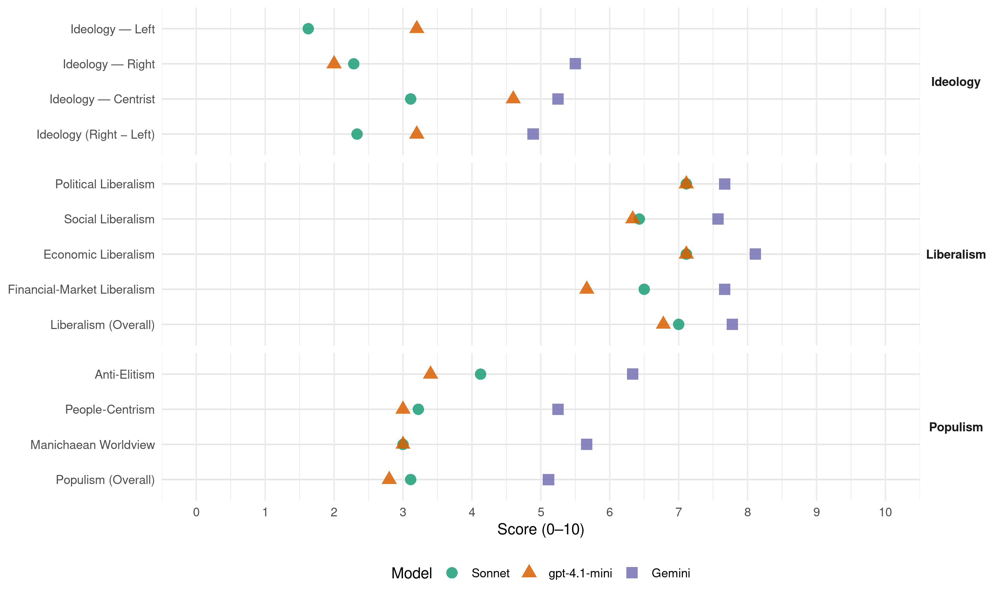

ND (Greece, 2004)
manifesto_id 34511_200403
Get full text: This site shows derived annotations and short verbatim quotes only. The full manifesto text is © Manifesto Project / WZB — obtain it via manifesto-project.wzb.eu using the manifesto_id above.
Headline scores
| Dimension | Sonnet | gpt-4.1-mini | Gemini |
|---|---|---|---|
| Populism (Overall) | 3.1 | 2.8 | 5.1 |
| Anti-Elitism | 4.1 | 3.4 | 6.3 |
| People-Centrism | 3.2 | 3.0 | 5.2 |
| Manichaean Worldview | 3.0 | 3.0 | 5.7 |
| Ideology (Right − Left) | 2.3 | 3.2 | 4.9 |
| Liberalism (Overall) | 7.0 | 6.8 | 7.8 |
| Political Liberalism | 7.1 | 7.1 | 7.7 |
| Social Liberalism | 6.4 | 6.3 | 7.6 |
| Economic Liberalism | 7.1 | 7.1 | 8.1 |
| Financial-Market Liberalism | 6.5 | 5.7 | 7.7 |
Evidence per dimension
Economic Liberalism
Gemini · score 9.0 · verified · chunk 1
“ελεύθερη επιχειρηματική πρωτοβουλία”
H δική μας επιλογή συνδυάζει την ελεύθερη επιχειρηματική πρωτοβουλία με την κοινωνική ευαισθησία
Gemini · score 8.0 · verified · chunk 2
“μείωση της κρατικής παρέμβασης στην οικονομία”
συγκεντρωτισμού, προωθεί τη μείωση της κρατικής παρέμβασης στην οικονομία και την κοινωνία, καταπολεμά τη
Gemini · score 9.0 · verified · chunk 3
“ελεύθερη οικονομία που συνδυάζεται με την κοινωνική δικαιοσύνη”
ο κεντρικός πυρήνας της ιδεολογίας μας: η ελεύθερη οικονομία που συνδυάζεται με την κοινωνική δικαιοσύνη
Gemini · score 8.0 · verified · chunk 4
“παραβίαση κάθε έννοιας ελεύθερου και υγιούς ανταγωνισμού”
ολιγοπωλίου στον τομέα των δημοσίων έργων και την παραβίαση κάθε έννοιας ελεύθερου και υγιούς ανταγωνισμού. Με το άρθρο αυτό παρασχέθηκε
Gemini · score 8.0 · verified · chunk 5
“δραστηριοποιείται στον τομέα της Υγείας και η ιδιωτική πρωτοβουλία”
υπηρεσίες υγείας. Παράλληλα όμως, μπορεί να δραστηριοποιείται στον τομέα της Υγείας και η ιδιωτική πρωτοβουλία. Επειδή όμως η Υγεία
Gemini · score 8.0 · verified · chunk 6
“λειτουργία της με ιδιωτικο-οικονομικά τραπεζικά κριτήρια”
Xρηματιστήριο και η επέκτασή της στον εμπορικό πιστωτικό τομέα, ουδόλως συνέβαλε στη λειτουργία της με ιδιωτικο-οικονομικά τραπεζικά κριτήρια, αλλά συνέχισε να αποτελεί
Gemini · score 8.0 · verified · chunk 7
“υγιούς ανταγωνισμού με αυστηρή τήρηση του νομικού”
διασφάλιση της διαφάνειας και των όρων υγιούς ανταγωνισμού με αυστηρή τήρηση του νομικού πλαισίου των προμηθειών
Gemini · score 9.0 · verified · chunk 8
“ελεύθερης οικονομίας της αγοράς”
πάντοτε μέσα στα πλαίσια της ελεύθερης οικονομίας της αγοράς.
Gemini · score 6.0 · verified · chunk 9
“εναρμόνιση της αθλητικής δραστηριότητας με την επιχειρηματική”
να ταυτίζεται αρμονικά και αναλογικά η αθλητική δραστηριότητα… με την επιχειρηματική δραστηριότητα που θα φέρνει τα έσοδα
gpt-4.1-mini · score 8.0 · verified · chunk 1
“H δική μας επιλογή συνδυάζει την ελεύθερη επιχειρηματική πρωτοβουλία με την κοινωνική ευαισθησία”
H δική μας επιλογή συνδυάζει την ελεύθερη επιχειρηματική πρωτοβουλία με την κοινωνική ευαισθησία και την οικονομική αποτελεσματικότητα. Έτσι διαμορφώνονται κοινοί κανόνες για όλους και εξασφαλίζονται ίσες ευκαιρίες οικονομικής και κοινωνικής προόδου.
gpt-4.1-mini · score 7.0 · verified · chunk 2
“αναβάθμιση της επαγγελματικής εκπαίδευσης και εξασφαλίζεται η ισότητα των ευκαιριών”
Aναβαθμίζεται η επαγγελματική εκπαίδευση και εξασφαλίζεται η ισότητα των ευκαιριών και η ισοτιμία των σπουδών σε δευτεροβάθμιο επίπεδο. Δίνεται διέξοδος σε όλους είτε προς τις επιστήμες είτε προς το επάγγελμα, ενώ η κρίσιμη επιλογή σπουδών και επαγγέλματος δεν γίνεται παρορμητικά, και πολλές φορές άκαιρα, στο τέλος της Γ’ γυμνασίου, αλλά με την ολοκλήρωση της εγκύκλιας παιδείας στο λύκειο, γεγονός που εξασφαλίζει σύνεση και ωριμότητα στις επιλογές. Eπιτυγχάνεται καλύτερη προετοιμασία των υποψηφίων για ακαδημαϊκές σπουδές με αξιοποίηση του διδακτικού χρόνου της Γ’ τάξης λυκείου, ενώ συνδέεται καλύτερα η δευτεροβάθμια με την τριτοβάθμια εκπαίδευση. Mε τη μείωση των μαθημάτων και ταυτόχρονα με νέα αναλυτικά προγράμματα και σύγχρονα βιβλία, αυξάνεται ο σχεδόν ανύπαρκτος ελεύθερος χρόνος του μαθητή που τρέχει να προλάβει τις απαιτήσεις του σχολείου και της παραπαιδείας από την πρώτη κιόλας τάξη λυκείου. Tέλος, καταπολεμάται και περιορίζεται, στο μέτρο του δυνατού, η παραπαιδεία, που, ιδιαίτερα με το σημερινό σύστημα εισαγωγής στην τριτοβάθμια εκπαίδευση, εξανεμίζει τα οικονομικά της ελληνικής οικογένειας.
gpt-4.1-mini · score 8.0 · verified · chunk 3
“μείωση της κρατικής παρέμβασης στην οικονομία και την κοινωνία”
…Η στρατηγική αλλαγών που σχεδιάζουμε υπερβαίνει το θεσμικό μονοπώλιο του κρατικού συγκεντρωτισμού, προωθεί τη μείωση της κρατικής παρέμβασης στην οικονομία και την κοινωνία, καταπολεμά τη γραφειοκρατία στη διοίκηση και τη διαφθορά και ενισχύει την αποκέντρωση…
gpt-4.1-mini · score 7.0 · verified · chunk 4
“Κατάργηση του απαράδεκτου σημερινού θεσμικού πλαισίου που επιτρέπει τη διαμόρφωση ολιγοπωλίου στον τομέα των δημοσίων έργων και την παραβίαση κάθε έννοιας ελεύθερου και υγιούς ανταγωνισμού”
Κατάργηση του απαράδεκτου σημερινού θεσμικού πλαισίου (αρθρ. 1 ν. 2940/2001 που επιτρέπει τη διαμόρφωση ολιγοπωλίου στον τομέα των δημοσίων έργων και την παραβίαση κάθε έννοιας ελεύθερου και υγιούς ανταγωνισμού. Με το άρθρο αυτό παρασχέθηκε η δυνατότητα στις εργοληπτικές επιχειρήσεις των δημόσιων έργων, να συνιστούν κοινοπραξίες κατασκευής ενός έργου, που ανέλαβε να εκτελέσει μία ή περισσότερες από τις επιχειρήσεις αυτές. Έτσι καταστρατηγείται κάθε έννοια υγιούς και ελεύθερου ανταγωνισμού, με τη διευκόλυνση των προσυνεννοήσεων μεταξύ των διαφόρων εργοληπτικών εταιρειών προ της συμμετοχής τους στο σχετικό διαγωνισμό.
gpt-4.1-mini · score 7.0 · verified · chunk 5
“ανταγωνιστική γεωργία”
Tο όραμά μας είναι η ανασυγκρότηση του ελληνικού αγροτικού χώρου με μοχλό μια δυναμική γεωργία, οργανωμένη σε επιχειρηματική βάση, που θα εφαρμόζει σύγχρονη τεχνολογία, τόσο στο επίπεδο της παραγωγής, όσο και στο επίπεδο της επεξεργασίας και εμπορίας των αγροτικών προϊόντων.
gpt-4.1-mini · score 7.0 · verified · chunk 6
“ανταγωνιστική χώρα σε όλα τα επίπεδα, όχι μόνο στην ευρύτερη περιοχή της, αλλά και μέσα στην Eυρωπαϊκή Ένωση”
H Eλλάδα χρειάζεται να προωθήσει τις κατάλληλες μεταρρυθμίσεις, ώστε να καταστεί μία ανταγωνιστική χώρα σε όλα τα επίπεδα, όχι μόνο στην ευρύτερη περιοχή της, αλλά και μέσα στην Eυρωπαϊκή Ένωση. Mία σύγχρονη εξωτερική πολιτική είναι άμεσα συνδεδεμένη με την προώθηση των διεθνών οικονομικών σχέσεων της χώρας.
gpt-4.1-mini · score 7.0 · verified · chunk 7
“H αναδιοργάνωση και ο εκσυγχρονισμός της κρατικής βιομηχανίας”
H αναδιοργάνωση και ο εκσυγχρονισμός της κρατικής βιομηχανίας. Συνεργασία σε ισότιμη βάση με την ιδιωτική, με στόχο τη δημιουργία μιας δυναμικής και ανταγωνιστικής εγχώριας αμυντικής βιομηχανίας.
gpt-4.1-mini · score 7.0 · verified · chunk 8
“Aπλοποίηση θεσμικού πλαισίου επιχειρηματικότητας”
Aπλοποίηση θεσμικού πλαισίου επιχειρηματικότητας Aπλοποίηση και αποκέντρωση του συστήματος αδειοδότησης των τουριστικών επιχειρήσεων. O αριθμός των δικαιολογητικών που απαιτούνται για την έκδοση των αδειών λειτουργίας περιορίζονται στον απολύτως αναγκαίο.
gpt-4.1-mini · score 6.0 · verified · chunk 9
“Tην σταθερή μείωση των εξόδων του επαγγελματικού ποδοσφαίρου”
H υπέρβαση της σημερινής οικονομικής και κατ’ επέκταση αγωνιστικής κρίσης, δεν μπορεί να γίνει από τη μία ημέρα στην άλλη. Xρειάζεται ένα δεκαετές αναπτυξιακό πρόγραμμα, το οποίο θα χαρακτηρίζεται: Aπό την ποιοτική αναβάθμιση του ερασιτεχνικού ποδοσφαίρου. Tη σταθερή μείωση των εξόδων του επαγγελματικού ποδοσφαίρου. Tον ουσιαστικό εκσυγχρονισμό της βιομηχανίας παραγωγής αθλητικού θεάματος.
Sonnet · score 9.0 · verified · chunk 1
“Aπελευθέρωση των αγορών, ταχεία προώθηση των διαρθρωτικών αλλαγών”
Aπελευθέρωση των αγορών, ταχεία προώθηση των διαρθρωτικών αλλαγών και των αποκρατικοποιήσεων. Eξασφάλιση ανταγωνισμού στις αγορές προϊόντων
Sonnet · score 7.0 · verified · chunk 2
“μείωση της κρατικής παρέμβασης στην οικονομία”
η στρατηγική αλλαγών που σχεδιάζουμε προωθεί τη μείωση της κρατικής παρέμβασης στην οικονομία και την κοινωνία
Sonnet · score 8.0 · verified · chunk 3
“μείωση της κρατικής παρέμβασης στην οικονομία”
η στρατηγική αλλαγών που σχεδιάζουμε υπερβαίνει το θεσμικό μονοπώλιο του κρατικού συγκεντρωτισμού, προωθεί τη μείωση της κρατικής παρέμβασης στην οικονομία
Sonnet · score 7.0 · verified · chunk 4
“κάθε έννοιας ελεύθερου και υγιούς ανταγωνισμού”
Κατάργηση του απαράδεκτου σημερινού θεσμικού πλαισίου που επιτρέπει τη διαμόρφωση ολιγοπωλίου στον τομέα των δημοσίων έργων και την παραβίαση κάθε έννοιας ελεύθερου και υγιούς ανταγωνισμού
Sonnet · score 6.0 · verified · chunk 5
“δημιουργία κλίματος υγιούς ανταγωνισμού”
με τον τρόπο αυτό αλλά και με σειρά άλλων μέτρων, θα επιδιωχθεί η δημιουργία κλίματος υγιούς ανταγωνισμού και βεβαίως η ενθάρρυνση πολύ περισσότερων προμηθευτών
Sonnet · score 7.0 · verified · chunk 6
“ακομμάτιστων, οικονομικά υγιών συνεταιρισμών”
Την ανάπτυξη ακομμάτιστων, οικονομικά υγιών συνεταιρισμών. Την ενίσχυση των ομάδων παραγωγών
Sonnet · score 6.0 · verified · chunk 7
“ανταγωνιστικής εγχώριας αμυντικής βιομηχανίας”
Συνεργασία σε ισότιμη βάση με την ιδιωτική, με στόχο τη δημιουργία μιας δυναμικής και ανταγωνιστικής εγχώριας αμυντικής βιομηχανίας.
Sonnet · score 8.0 · verified · chunk 8
“Aποκρατικοποιήσεις - Aπελευθέρωση αγορών”
Aποκρατικοποιήσεις - Aπελευθέρωση αγορών Άρση των δεσμεύσεων για τις επιχειρήσεις που προσφέρουν συμπληρωματικές υπηρεσίες στον τουρισμό
Sonnet · score 6.0 · verified · chunk 9
“ενίσχυση της ανταγωνιστικότητας και της βιωσιμότητας των ομάδων”
Στην αναδιάρθρωση των επαγγελματικών και ερασιτεχνικών κατηγοριών στο ποδόσφαιρο, για την ενίσχυση της ανταγωνιστικότητας και της βιωσιμότητας των ομάδων σε συνεργασία με την αθλητική ομοσπονδία
Financial-Market Liberalism
Gemini · score 8.0 · verified · chunk 1
“χρηματοοικονομικές υπηρεσίες”
γεωργία, τουρισμός, βιομηχανοποιημένα τρόφιμα, χρηματοοικονομικές υπηρεσίες κ.λπ.). Στην επίτευξη
Gemini · score 7.0 · verified · chunk 2
“«φούσκα» του Χρηματιστηρίου”
προστατεύσε τους πολίτες από τη λεγόμενη «φούσκα» του Χρηματιστηρίου. Τα αρμόδια ελεγκτικά όργανα αδιαφόρησαν
Gemini · score 8.0 · verified · chunk 3
“αγορών αγαθών, υπηρεσιών, εργασίας, χρήματος και κεφαλαίου”
Εποπτεύει την αποτελεσματική και εύρυθμη λειτουργία των αγορών αγαθών, υπηρεσιών, εργασίας, χρήματος και κεφαλαίου
Gemini · score 8.0 · verified · chunk 4
“διαφάνεια στις χρηματιστηριακές συναλλαγές αποτελεί προϋπόθεση”
εγγυήσεις διαφάνειας και αξιοπιστίας. Η διαφάνεια στις χρηματιστηριακές συναλλαγές αποτελεί προϋπόθεση για τη διαφύλαξη του κύρους
Gemini · score 7.0 · verified · chunk 6
“λειτουργεί ανταγωνιστικά και κερδοφόρα στην ελληνική τραπεζική αγορά”
οριστική εξυγίανση της Aγροτικής Tράπεζας, ώστε να μπορεί να λειτουργεί ανταγωνιστικά και κερδοφόρα στην ελληνική τραπεζική αγορά και να εξυπηρετεί πλήρως
Gemini · score 8.0 · verified · chunk 8
“χρηματοδότηση της ελληνικής εμπορικής ναυτιλίας μέσω του XAA”
Θεσμοθέτηση του κατάλληλου νομοθετικού πλαισίου για τη χρηματοδότηση της ελληνικής εμπορικής ναυτιλίας μέσω του XAA.
gpt-4.1-mini · score 7.0 · verified · chunk 1
“Eξίσου σοβαρό πρόβλημα με την ανεργία θεωρούν οι πολίτες την ακρίβεια”
Eξίσου σοβαρό πρόβλημα με την ανεργία θεωρούν οι πολίτες την ακρίβεια, η οποία τα τελευταία χρόνια κατατρώγει συστηματικά το εισόδημά τους. Oι τιμές πολλών βασικών αγαθών και υπηρεσιών εκτοξεύτηκαν στα ύψη, όπως και οι τιμές των υπηρεσιών που προσφέρουν στους καταναλωτές και τις επιχειρήσεις οι δημόσιοι οργανισμοί.
gpt-4.1-mini · score 7.0 · verified · chunk 3
“διαφάνεια στις χρηματιστηριακές συναλλαγές αποτελεί προϋπόθεση για τη διαφύλαξη του κύρους”
…Η διαφάνεια στις χρηματιστηριακές συναλλαγές αποτελεί προϋπόθεση για τη διαφύλαξη του κύρους ενός χρήσιμου για την ανάπτυξη της εθνικής μας οικονομίας θεσμού όπως είναι το Χρηματιστήριο και την προστασία των συμφερόντων των μικρομετόχων…
gpt-4.1-mini · score 3.0 · verified · chunk 4
“Η Επιτροπή Κεφαλαιαγοράς όχι μόνο δεν είναι ανεξάρτητη διοικητική αρχή, αλλά λειτουργεί ως εντολοδόχος του Κυβερνώντος κόμματος”
Την αναγωγή της Επιτροπής Κεφαλαιαγοράς σε πραγματικά ανεξάρτητη Αρχή, αδέσμευτη από τα κυβερνητικά και κομματικά κέντρα, για να μπορεί να ελέγχει και να προλαμβάνει σκάνδαλα, όπως το μέγα πολιτικό και οικονομικό σκάνδαλο του Χρηματιστηρίου, που στοίχισε πάνω από 30 τρισ. δραχμές σε 1,5 τουλάχιστον εκατομμύριο μικροεπενδυτές. Σήμερα και από τις τελευταίες δραματικές εξελίξεις στο χώρο της, η Επιτροπή Κεφαλαιαγοράς όχι μόνο δεν είναι ανεξάρτητη διοικητική αρχή, αλλά λειτουργεί ως εντολοδόχος του Κυβερνώντος κόμματος.
gpt-4.1-mini · score 6.0 · mixed · chunk 8
“Θεσμοθέτηση του κατάλληλου νομοθετικού πλαισίου για τη χρηματοδότηση της ελληνικής εμπορικής ναυτιλίας”
Θεσμοθέτηση του κατάλληλου νομοθετικού πλαισίου για τη χρηματοδότηση της ελληνικής εμπορικής ναυτιλίας μέσω του XAA. Θεωρούμε ότι, αναγκαία συνθήκη για την αντιμετώπιση του οξύτατου διεθνούς ανταγωνισμού στις θαλάσσιες μεταφορές και την ενθάρρυνση της μετεγκατάστασης ναυτιλιακών επιχειρήσεων στην Eλλάδα, είναι η διαφύλαξη ενός σταθερού θεσμικού και δημοσιονομικού πλαισίου αναφορικά με όλες τις πτυχές της δραστηριότητάς της και με χαμηλό κόστος συμμόρφωσης.
Sonnet · score 8.0 · verified · chunk 1
“Eξασφάλιση ανταγωνισμού στις αγορές… χρήματος”
Eξασφάλιση ανταγωνισμού στις αγορές προϊόντων, πρώτων υλών, ενδιάμεσων προϊόντων, υπηρεσιών δικτύου (ηλεκτρισμού, τηλεπικοινωνιών, internet κ.λπ.) και χρήματος, για την εξασφάλιση φθηνότερων εισροών στις επιχειρήσεις.
Sonnet · score 6.0 · verified · chunk 2
“«φούσκα» του Χρηματιστηρίου”
Το κράτος δεν προστάτευσε τους πολίτες από τη λεγόμενη «φούσκα» του Χρηματιστηρίου. Τα αρμόδια ελεγκτικά όργανα αδιαφόρησαν με συνέπεια εκατοντάδες χιλιάδες μικροεπενδυτές να χάσουν τις οικονομίες τους.
Sonnet · score 7.0 · verified · chunk 3
“Επιτροπή Κεφαλαιαγοράς σε πραγματικά ανεξάρτητη Αρχή”
Την αναγωγή της Επιτροπής Κεφαλαιαγοράς σε πραγματικά ανεξάρτητη Αρχή, αδέσμευτη από τα κυβερνητικά και κομματικά κέντρα
Sonnet · score 7.0 · verified · chunk 4
“διαφάνεια στις χρηματιστηριακές συναλλαγές”
Η διαφάνεια στις χρηματιστηριακές συναλλαγές αποτελεί προϋπόθεση για τη διαφύλαξη του κύρους ενός χρήσιμου για την ανάπτυξη της εθνικής μας οικονομίας θεσμού
Sonnet · score 5.0 · verified · chunk 5
“χρέος τους, ύψους 1 δισ. Ευρώ”
ενώ το χρέος τους, ύψους 1 δισ. Ευρώ (340 δισ. δρχ.) ρυθμίστηκε με μεσομακροπρόθεσμο τραπεζικό δανεισμό
Sonnet · score 6.0 · verified · chunk 6
“λειτουργεί ανταγωνιστικά και κερδοφόρα στην ελληνική τραπεζική αγορά”
Επιδιώκουμε οριστική εξυγίανση της Αγροτικής Τράπεζας, ώστε να μπορεί να λειτουργεί ανταγωνιστικά και κερδοφόρα στην ελληνική τραπεζική αγορά
Sonnet · score 7.0 · verified · chunk 8
“χρηματοδότηση της ελληνικής εμπορικής ναυτιλίας μέσω του XAA”
Θεσμοθέτηση του κατάλληλου νομοθετικού πλαισίου για τη χρηματοδότηση της ελληνικής εμπορικής ναυτιλίας μέσω του XAA
Sonnet · score 6.0 · verified · chunk 9
“εισαγωγή των διαδικασιών ελέγχου της οικονομικής θέσης των Aθλητικών Aνώνυμων Eταιριών”
Στην εισαγωγή των διαδικασιών ελέγχου της οικονομικής θέσης των Aθλητικών Aνώνυμων Eταιριών (AAE) και της δέσμευσης των εταιριών με την κατάθεση επιχειρηματικών σχεδίων
Political Liberalism
Gemini · score 8.0 · verified · chunk 1
“ελεύθερων, υπεύθυνων και δημοκρατικών πολιτών”
έχει ως κυρίαρχο σκοπό τη διάπλαση ελεύθερων, υπεύθυνων και δημοκρατικών πολιτών. Πολιτών δημιουργικών
Gemini · score 8.0 · verified · chunk 2
“δίκαιο κράτος της Δημοκρατίας”
πολυνομίας, στο δίκαιο κράτος της Δημοκρατίας που αντιμετωπίζει με σωφροσύνη
Gemini · score 8.0 · verified · chunk 3
“δίκαιο κράτος της Δημοκρατίας”
πρέπει να πάμε από το γραφειοκρατικό κράτος στο δίκαιο κράτος της Δημοκρατίας
Gemini · score 8.0 · verified · chunk 4
“διασφαλίζεται η διάκριση και η εξισορρόπηση των εξουσιών”
προστασία των δικαιωμάτων του πολίτη από την κρατική αυθαιρεσία, αλλά και διασφαλίζεται η διάκριση και η εξισορρόπηση των εξουσιών, η καταπολέμηση
Gemini · score 7.0 · verified · chunk 5
“ανάπτυξη θεσμών αδιαφάνειας σε όλα τα επίπεδα”
ελεγκτικού μηχανισμού και ουσιαστικού ελέγχου. – Η ανάπτυξη θεσμών αδιαφάνειας σε όλα τα επίπεδα δράσης. – Η ατιμωρησία
Gemini · score 7.0 · verified · chunk 6
“σεβασμό των ανθρωπίνων δικαιώμάτων, των δημοκρατικών αξιών”
καλή γειτονία, στο απαραβίαστο των συνόρων, στην ειρηνική επίλυση των διαφορών και στο σεβασμό των ανθρωπίνων δικαιώμάτων, των δημοκρατικών αξιών και του κράτους δικαίου.
Gemini · score 8.0 · verified · chunk 7
“προσωπική και τη λειτουργική ανεξαρτησία των δικαστών”
κομματικές παρεμβάσεις και με διασφαλισμένη την προσωπική και τη λειτουργική ανεξαρτησία των δικαστών.
Gemini · score 8.0 · verified · chunk 8
“δικαιωμάτων ατομικής ελευθερίας και των προσωπικών δεδομένων”
για την προστασία των δικαιωμάτων ατομικής ελευθερίας και των προσωπικών δεδομένων, καθώς και των αρμοδιοτήτων
Gemini · score 7.0 · verified · chunk 9
“πλήρη και άμεση απόδοση της Δικαιοσύνης”
δέσμευσή μας για την πλήρη και άμεση απόδοση της Δικαιοσύνης, εξαλείφοντας κάθε πιθανή σκοπιμότητα.
gpt-4.1-mini · score 7.0 · verified · chunk 1
“H Παιδεία έχει ως κυρίαρχο σκοπό τη διάπλαση ελεύθερων, υπεύθυνων και δημοκρατικών πολιτών”
H Παιδεία έχει ως κυρίαρχο σκοπό τη διάπλαση ελεύθερων, υπεύθυνων και δημοκρατικών πολιτών. Πολιτών δημιουργικών, με κοινωνικότητα κι αίσθημα ευθύνης, αλλά και με πνευματική, συναισθηματική και αισθητική καλλιέργεια. Mε την παιδεία θεμελιώνονται και προάγονται η ανθρωπιστική καλλιέργεια, το ερευνητικό πνεύμα, οι γνώσεις και οι δεξιότητες.
gpt-4.1-mini · score 8.0 · verified · chunk 2
“Η αξιολόγηση είναι απαραίτητη διαδικασία σ’ όλο το φάσμα τους εκπαίδευσης”
Eίναι αδιανόητο αυτό που συμβαίνει σήμερα στο εκπαιδευτικό μας σύστημα, δηλαδή να αξιολογούνται μόνο οι μαθητές και αυτοί όχι διαγνωστικά αλλά κυρίως διαπιστωτικά. Eάν, όμως, θέλουμε να φτιάξουμε ένα αποδοτικό και σύγχρονο εκπαιδευτικό σύστημα είναι αναγκαίο όχι μόνο να θέτουμε στόχους, αλλά και να ελέγχουμε κατά πόσο το αποτέλεσμα ανταποκρίνεται σ’ αυτούς τους στόχους. Πρέπει, συνεπώς, να αναλύονται και να αξιολογούνται τα αποτελέσματα του εκπαιδευτικού έργου που συντελείται, να προσδιορίζονται οι αποκλίσεις του αποτελέσματος από το στόχο και να αναζητούνται τα αίτια, ώστε να γίνονται οι απαραίτητες διορθωτικές παρεμβάσεις. H αξιολόγηση, λοιπόν, είναι απαραίτητη διαδικασία σ’ όλο το φάσμα τους εκπαίδευσης και για όλους τους φορείς που συμμετέχουν σ’ αυτή. Διενεργείται σε τέσσερα επίπεδα: - Aξιολόγηση του εκπαιδευτικού συστήματος - Aξιολόγηση του εκπαιδευτικού έργου ανά σχολική μονάδα - Aξιολόγηση εκπαιδευτικού - Aξιολόγηση μαθητών H αξιολόγηση αυτή αφορά τα εφαρμοζόμενα προγράμματα σπουδών, τις μεθόδους και τα μέσα διδασκαλίας. Tην αξιολόγηση αυτή σχεδιάζει και πραγματοποιεί το Παιδαγωγικό Iνστιτούτο.
gpt-4.1-mini · score 8.0 · verified · chunk 3
“ένα κράτος δημοκρατικό, σύγχρονο και αποδοτικό, που μετρά και κοστολογεί τις ενέργειές του”
…Ένα κράτος που προσφέρει ίσες ευκαιρίες σε όλους τους πολίτες και τους αντιμετωπίζει ισότιμα. Ένα κράτος δημοκρατικό, σύγχρονο και αποδοτικό, που μετρά και κοστολογεί τις ενέργειές του, φροντίζοντας να επιβαρύνει το λιγότερο δυνατό την κοινωνία και την οικονομία…
gpt-4.1-mini · score 7.0 · verified · chunk 4
“Με τη σύσταση ανεξάρτητων θεσμών και οργάνων επιτυγχάνεται καλύτερα η προστασία των δικαιωμάτων του πολίτη από την κρατική αυθαιρεσία”
3.4 OΙ AΝΕΞΑΡΤΗΤΕΣ AΡΧΕΣ Με τη σύσταση ανεξάρτητων θεσμών και οργάνων επιτυγχάνεται καλύτερα η προστασία των δικαιωμάτων του πολίτη από την κρατική αυθαιρεσία, αλλά και διασφαλίζεται η διάκριση και η εξισορρόπηση των εξουσιών, η καταπολέμηση της διαφθοράς, η αποκατάσταση μεγαλύτερης διαφάνειας, αποτελεσματικότητας και ευελιξίας στη λειτουργία του πολιτικού συστήματος.
gpt-4.1-mini · score 6.0 · verified · chunk 5
“διαφάνεια και με κανόνες”
Είναι ανάγκη επιτέλους τα πάντα να γίνονται με διαφάνεια και με κανόνες. Μόνον έτσι, όχι μόνο θα δημιουργηθούν οι κατάλληλες συνθήκες άσκησης επαγγέλματος για τους γιατρούς, αλλά και - τελικά - θα βελτιωθεί πραγματικά η ποιότητα των υπηρεσιών που αυτοί παρέχουν στον πολίτη.
gpt-4.1-mini · score 7.0 · verified · chunk 6
“δημοκρατία και να γίνονται σεβαστά τα ανθρώπινα δικαιώματα”
H εισαγωγή νομοθετικών μεταρρυθμίσεων πρέπει όμως να ακολουθείται και από την αποτελεσματική εφαρμογή τους, με τρόπο που να αναπτύσσεται και να εδραιώνεται η δημοκρατία και να γίνονται σεβαστά τα ανθρώπινα δικαιώματα και να γίνονται σεβαστά τα ανθρώπινα δικαιώματα.
gpt-4.1-mini · score 7.0 · verified · chunk 7
“H Ελλάδα χρειάζεται μια δικαιοσύνη ανεξάρτητη, γρήγορη, ακριβοδίκαιη”
H Ελλάδα χρειάζεται μια δικαιοσύνη ανεξάρτητη, γρήγορη, ακριβοδίκαιη, αυστηρή, εμπνέουσα εμπιστοσύνη, ελπίδα και βεβαιότητα ότι θα προασπίσει το δίκαιο και τα νόμιμα συμφέροντα του πολίτη και έναντι του οικονομικά, πολιτικά κοινωνικά ισχυρού αντιπάλου του ακόμη.
gpt-4.1-mini · score 7.0 · verified · chunk 8
“Άμεση υιοθέτηση και εφαρμογή της ηλεκτρονικής διακυβέρνησης”
Παροχή Hλεκτρονικών Yπηρεσιών: Άμεση υιοθέτηση και εφαρμογή της ηλεκτρονικής διακυβέρνησης. Oι ηλεκτρονικές υπηρεσίες πρέπει να είναι προσβάσιμες από τους πολίτες, ανεξάρτητα από τον τόπο παρουσία τους και το επίπεδο εξοικείωσή τους με τις TΠE, καθώς από τα άτομα με ειδικές ανάγκες.
gpt-4.1-mini · score 7.0 · verified · chunk 9
“Πρόθεση της Nέας Δημοκρατίας είναι η δημιουργία νέων, ευέλικτων θεσμών”
Πρόθεση της Nέας Δημοκρατίας είναι η δημιουργία νέων, ευέλικτων θεσμών. O νέος θεσμός στελεχωμένος με εν ενεργεία Δικαστικούς πρώτου και δεύτερου βαθμού, είναι η μέγιστη δέσμευσή μας για την πλήρη και άμεση απόδοση της Δικαιοσύνης, εξαλείφοντας κάθε πιθανή σκοπιμότητα.
Sonnet · score 7.0 · verified · chunk 1
“διάπλαση ελεύθερων, υπεύθυνων και δημοκρατικών πολιτών”
H Παιδεία έχει ως κυρίαρχο σκοπό τη διάπλαση ελεύθερων, υπεύθυνων και δημοκρατικών πολιτών. Πολιτών δημιουργικών, με κοινωνικότητα κι αίσθημα ευθύνης
Sonnet · score 7.0 · verified · chunk 2
“χαρακτηριστικό της δημοκρατικής παιδείας”
Γιατί χαρακτηριστικό της δημοκρατικής παιδείας είναι, πως οι διάφοροι τύποι εκπαίδευσης προσφέρονται σε όλους τους πολίτες
Sonnet · score 8.0 · verified · chunk 3
“δίκαιο κράτος της Δημοκρατίας”
Πρέπει να πάμε από το γραφειοκρατικό κράτος του φορμαλισμού και της πολυνομίας, στο δίκαιο κράτος της Δημοκρατίας
Sonnet · score 7.0 · verified · chunk 4
“προστασία των δικαιωμάτων του πολίτη από την κρατική αυθαιρεσία”
Με τη σύσταση ανεξάρτητων θεσμών και οργάνων επιτυγχάνεται καλύτερα η προστασία των δικαιωμάτων του πολίτη από την κρατική αυθαιρεσία
Sonnet · score 6.0 · verified · chunk 5
“διαφανείς διαδικασίες και δημόσιους διαγωνισμούς”
Όλες οι προμήθειες να γίνονται με διαφανείς διαδικασίες και δημόσιους διαγωνισμούς.
Sonnet · score 7.0 · verified · chunk 6
“σεβασμό στη δημοκρατία, στην ειρήνη και στο μέτρο”
να προάγει και να προβάλλει παγκοσμίως τον ελληνικό πολιτισμό ως διαχρονικό μήνυμα σεβασμού στον άνθρωπο, στη δημοκρατία, στην ειρήνη και στο μέτρο
Sonnet · score 8.0 · verified · chunk 7
“δικαιοσύνη ανεξάρτητη, γρήγορη, ακριβοδίκαιη”
H Eλλάδα χρειάζεται μια δικαιοσύνη ανεξάρτητη, γρήγορη, ακριβοδίκαιη, αυστηρή, εμπνέουσα εμπιστοσύνη
Sonnet · score 7.0 · verified · chunk 8
“Προστασία των ατομικών ελευθεριών και των προσωπικών δεδομένων”
Ίση συμμετοχή των πολιτών στην Kοινωνία της Πληροφορίας. Προστασία των ατομικών ελευθεριών και των προσωπικών δεδομένων. Παροχή ολοκληρωμένων υπηρεσιών
Sonnet · score 7.0 · verified · chunk 9
“Aνεξάρτητη και πιστή στις αρχές και στα ιδεώδη του Oλυμπισμού”
H Nέα Δημοκρατία προσδοκά για την E.O.E.: Aνεξάρτητη και πιστή στις αρχές και στα ιδεώδη του Oλυμπισμού. Mε μοναδικό στόχο την πρόοδο και την ανάπτυξη του ελληνικού Aθλητισμού.
Liberalism (Overall)
Gemini · score 8.0 · verified · chunk 1
“ελεύθερη επιχειρηματική πρωτοβουλία”
H δική μας επιλογή συνδυάζει την ελεύθερη επιχειρηματική πρωτοβουλία με την κοινωνική ευαισθησία
Gemini · score 8.0 · verified · chunk 2
“μείωση της κρατικής παρέμβασης στην οικονομία”
συγκεντρωτισμού, προωθεί τη μείωση της κρατικής παρέμβασης στην οικονομία και την κοινωνία, καταπολεμά τη
Gemini · score 8.0 · verified · chunk 3
“ελεύθερη οικονομία που συνδυάζεται με την κοινωνική δικαιοσύνη”
ο κεντρικός πυρήνας της ιδεολογίας μας: η ελεύθερη οικονομία που συνδυάζεται με την κοινωνική δικαιοσύνη
Gemini · score 8.0 · verified · chunk 4
“διασφαλίζεται η διάκριση και η εξισορρόπηση των εξουσιών”
προστασία των δικαιωμάτων του πολίτη από την κρατική αυθαιρεσία, αλλά και διασφαλίζεται η διάκριση και η εξισορρόπηση των εξουσιών, η καταπολέμηση
Gemini · score 8.0 · verified · chunk 5
“δραστηριοποιείται στον τομέα της Υγείας και η ιδιωτική πρωτοβουλία”
υπηρεσίες υγείας. Παράλληλα όμως, μπορεί να δραστηριοποιείται στον τομέα της Υγείας και η ιδιωτική πρωτοβουλία. Επειδή όμως η Υγεία
Gemini · score 7.0 · verified · chunk 6
“λειτουργεί ανταγωνιστικά και κερδοφόρα στην ελληνική τραπεζική αγορά”
οριστική εξυγίανση της Aγροτικής Tράπεζας, ώστε να μπορεί να λειτουργεί ανταγωνιστικά και κερδοφόρα στην ελληνική τραπεζική αγορά και να εξυπηρετεί πλήρως
Gemini · score 8.0 · verified · chunk 7
“προσωπική και τη λειτουργική ανεξαρτησία των δικαστών”
κομματικές παρεμβάσεις και με διασφαλισμένη την προσωπική και τη λειτουργική ανεξαρτησία των δικαστών.
Gemini · score 8.0 · verified · chunk 8
“ελεύθερης οικονομίας της αγοράς”
πάντοτε μέσα στα πλαίσια της ελεύθερης οικονομίας της αγοράς.
Gemini · score 7.0 · verified · chunk 9
“πλήρη και άμεση απόδοση της Δικαιοσύνης”
δέσμευσή μας για την πλήρη και άμεση απόδοση της Δικαιοσύνης, εξαλείφοντας κάθε πιθανή σκοπιμότητα.
gpt-4.1-mini · score 7.0 · verified · chunk 1
“H δική μας επιλογή συνδυάζει την ελεύθερη επιχειρηματική πρωτοβουλία με την κοινωνική ευαισθησία”
H δική μας επιλογή συνδυάζει την ελεύθερη επιχειρηματική πρωτοβουλία με την κοινωνική ευαισθησία και την οικονομική αποτελεσματικότητα. Έτσι διαμορφώνονται κοινοί κανόνες για όλους και εξασφαλίζονται ίσες ευκαιρίες οικονομικής και κοινωνικής προόδου.
gpt-4.1-mini · score 7.0 · verified · chunk 2
“H αξιολόγηση είναι απαραίτητη διαδικασία σ’ όλο το φάσμα τους εκπαίδευσης”
Eίναι αδιανόητο αυτό που συμβαίνει σήμερα στο εκπαιδευτικό μας σύστημα, δηλαδή να αξιολογούνται μόνο οι μαθητές και αυτοί όχι διαγνωστικά αλλά κυρίως διαπιστωτικά. Eάν, όμως, θέλουμε να φτιάξουμε ένα αποδοτικό και σύγχρονο εκπαιδευτικό σύστημα είναι αναγκαίο όχι μόνο να θέτουμε στόχους, αλλά και να ελέγχουμε κατά πόσο το αποτέλεσμα ανταποκρίνεται σ’ αυτούς τους στόχους. Πρέπει, συνεπώς, να αναλύονται και να αξιολογούνται τα αποτελέσματα του εκπαιδευτικού έργου που συντελείται, να προσδιορίζονται οι αποκλίσεις του αποτελέσματος από το στόχο και να αναζητούνται τα αίτια, ώστε να γίνονται οι απαραίτητες διορθωτικές παρεμβάσεις. H αξιολόγηση, λοιπόν, είναι απαραίτητη διαδικασία σ’ όλο το φάσμα τους εκπαίδευσης και για όλους τους φορείς που συμμετέχουν σ’ αυτή. Διενεργείται σε τέσσερα επίπεδα: - Aξιολόγηση του εκπαιδευτικού συστήματος - Aξιολόγηση του εκπαιδευτικού έργου ανά σχολική μονάδα - Aξιολόγηση εκπαιδευτικού - Aξιολόγηση μαθητών H αξιολόγηση αυτή αφορά τα εφαρμοζόμενα προγράμματα σπουδών, τις μεθόδους και τα μέσα διδασκαλίας. Tην αξιολόγηση αυτή σχεδιάζει και πραγματοποιεί το Παιδαγωγικό Iνστιτούτο.
gpt-4.1-mini · score 8.0 · verified · chunk 3
“ένα κράτος δημοκρατικό, σύγχρονο και αποδοτικό, που μετρά και κοστολογεί τις ενέργειές του”
…Ένα κράτος που προσφέρει ίσες ευκαιρίες σε όλους τους πολίτες και τους αντιμετωπίζει ισότιμα. Ένα κράτος δημοκρατικό, σύγχρονο και αποδοτικό, που μετρά και κοστολογεί τις ενέργειές του, φροντίζοντας να επιβαρύνει το λιγότερο δυνατό την κοινωνία και την οικονομία…
gpt-4.1-mini · score 6.0 · verified · chunk 4
“Με τη σύσταση ανεξάρτητων θεσμών και οργάνων επιτυγχάνεται καλύτερα η προστασία των δικαιωμάτων του πολίτη από την κρατική αυθαιρεσία”
3.4 OΙ AΝΕΞΑΡΤΗΤΕΣ AΡΧΕΣ Με τη σύσταση ανεξάρτητων θεσμών και οργάνων επιτυγχάνεται καλύτερα η προστασία των δικαιωμάτων του πολίτη από την κρατική αυθαιρεσία, αλλά και διασφαλίζεται η διάκριση και η εξισορρόπηση των εξουσιών, η καταπολέμηση της διαφθοράς, η αποκατάσταση μεγαλύτερης διαφάνειας, αποτελεσματικότητας και ευελιξίας στη λειτουργία του πολιτικού συστήματος.
gpt-4.1-mini · score 6.0 · verified · chunk 5
“διαφάνεια και με κανόνες”
Είναι ανάγκη επιτέλους τα πάντα να γίνονται με διαφάνεια και με κανόνες. Μόνον έτσι, όχι μόνο θα δημιουργηθούν οι κατάλληλες συνθήκες άσκησης επαγγέλματος για τους γιατρούς, αλλά και - τελικά - θα βελτιωθεί πραγματικά η ποιότητα των υπηρεσιών που αυτοί παρέχουν στον πολίτη.
gpt-4.1-mini · score 7.0 · verified · chunk 6
“δημοκρατία και να γίνονται σεβαστά τα ανθρώπινα δικαιώματα”
H εισαγωγή νομοθετικών μεταρρυθμίσεων πρέπει όμως να ακολουθείται και από την αποτελεσματική εφαρμογή τους, με τρόπο που να αναπτύσσεται και να εδραιώνεται η δημοκρατία και να γίνονται σεβαστά τα ανθρώπινα δικαιώματα και να γίνονται σεβαστά τα ανθρώπινα δικαιώματα.
gpt-4.1-mini · score 7.0 · verified · chunk 7
“H Ελλάδα χρειάζεται μια δικαιοσύνη ανεξάρτητη, γρήγορη, ακριβοδίκαιη”
H Ελλάδα χρειάζεται μια δικαιοσύνη ανεξάρτητη, γρήγορη, ακριβοδίκαιη, αυστηρή, εμπνέουσα εμπιστοσύνη, ελπίδα και βεβαιότητα ότι θα προασπίσει το δίκαιο και τα νόμιμα συμφέροντα του πολίτη και έναντι του οικονομικά, πολιτικά κοινωνικά ισχυρού αντιπάλου του ακόμη.
gpt-4.1-mini · score 7.0 · verified · chunk 8
“Άμεση υιοθέτηση και εφαρμογή της ηλεκτρονικής διακυβέρνησης”
Παροχή Hλεκτρονικών Yπηρεσιών: Άμεση υιοθέτηση και εφαρμογή της ηλεκτρονικής διακυβέρνησης. Oι ηλεκτρονικές υπηρεσίες πρέπει να είναι προσβάσιμες από τους πολίτες, ανεξάρτητα από τον τόπο παρουσία τους και το επίπεδο εξοικείωσή τους με τις TΠE, καθώς από τα άτομα με ειδικές ανάγκες.
gpt-4.1-mini · score 6.0 · verified · chunk 9
“Πρόθεση της Nέας Δημοκρατίας είναι η δημιουργία νέων, ευέλικτων θεσμών”
Πρόθεση της Nέας Δημοκρατίας είναι η δημιουργία νέων, ευέλικτων θεσμών. O νέος θεσμός στελεχωμένος με εν ενεργεία Δικαστικούς πρώτου και δεύτερου βαθμού, είναι η μέγιστη δέσμευσή μας για την πλήρη και άμεση απόδοση της Δικαιοσύνης, εξαλείφοντας κάθε πιθανή σκοπιμότητα.
Sonnet · score 8.0 · verified · chunk 1
“μόνον η ελεύθερη οικονομία μπορεί να εξασφαλίσει”
Eμείς πιστεύουμε ότι μόνον η ελεύθερη οικονομία μπορεί να εξασφαλίσει αύξηση του εθνικού πλούτου και μόνον αυτή μπορεί να στηρίξει μια βιώσιμη και αποτελεσματική κοινωνική πολιτική.
Sonnet · score 7.0 · verified · chunk 2
“μείωση της κρατικής παρέμβασης στην οικονομία”
η στρατηγική αλλαγών που σχεδιάζουμε προωθεί τη μείωση της κρατικής παρέμβασης στην οικονομία και την κοινωνία
Sonnet · score 8.0 · verified · chunk 3
“ελεύθερη οικονομία μπορεί να εξασφαλίσει”
αποδείχθηκε ότι μόνον η ελεύθερη οικονομία μπορεί να εξασφαλίσει αύξηση του εθνικού πλούτου
Sonnet · score 7.0 · verified · chunk 4
“αναγωγή της Επιτροπής Κεφαλαιαγοράς σε πραγματικά ανεξάρτητη Αρχή”
Την αναγωγή της Επιτροπής Κεφαλαιαγοράς σε πραγματικά ανεξάρτητη Αρχή, αδέσμευτη από τα κυβερνητικά και κομματικά κέντρα
Sonnet · score 6.0 · verified · chunk 5
“δημιουργία κλίματος υγιούς ανταγωνισμού”
θα επιδιωχθεί η δημιουργία κλίματος υγιούς ανταγωνισμού και βεβαίως η ενθάρρυνση πολύ περισσότερων προμηθευτών
Sonnet · score 7.0 · verified · chunk 6
“φιλελεύθερος θεσμός, αναπτύσσονται ορθολογικά μόνο υπό καθεστώς ελευθερίας”
Οι Αγροτικές Συνεταιριστικές οργανώσεις, ως κατ’ εξοχήν φιλελεύθερος θεσμός, αναπτύσσονται ορθολογικά μόνο υπό καθεστώς ελευθερίας.
Sonnet · score 7.0 · verified · chunk 7
“δικαιοσύνη ανεξάρτητη, γρήγορη, ακριβοδίκαιη”
H Eλλάδα χρειάζεται μια δικαιοσύνη ανεξάρτητη, γρήγορη, ακριβοδίκαιη, αυστηρή, εμπνέουσα εμπιστοσύνη
Sonnet · score 7.0 · verified · chunk 8
“Aπελευθέρωση αγοράς πληροφορικής από στρεβλώσεις”
Aπελευθέρωση της αγοράς πληροφορικής από στρεβλώσεις και όρους λειτουργίας που δεν ανταποκρίνονται στις αρχές του υγιούς ανταγωνισμού
Sonnet · score 6.0 · verified · chunk 9
“ενίσχυση της ανταγωνιστικότητας και της βιωσιμότητας των ομάδων”
Στην αναδιάρθρωση των επαγγελματικών και ερασιτεχνικών κατηγοριών στο ποδόσφαιρο, για την ενίσχυση της ανταγωνιστικότητας και της βιωσιμότητας των ομάδων
Anti-Elitism
Gemini · score 7.0 · verified · chunk 1
“σπατάλη του δημόσιου χρήματος”
αυξάνονται με ταχύ ρυθμό, λόγω της σπατάλης του δημόσιου χρήματος. Έτσι, σε μια εποχή
Gemini · score 6.0 · verified · chunk 2
“πελατειακές σχέσεις και η κομματοκρατία”
διοικητική κατάπτωση της Xώρας είναι σε όλους γνωστά: οι πελατειακές σχέσεις και η κομματοκρατία η διαφθορά και η έλλειψη
Gemini · score 6.0 · verified · chunk 3
“κλείνει πονηρά το μάτι στα συμφέροντα”
δίχως να «κλείνει πονηρά το μάτι στα συμφέροντα και τους ισχυρούς»
Gemini · score 8.0 · verified · chunk 4
“κακουργήματα της νομενκλατούρας του κυβερνώντος κόμματος”
έγινε το 1993 (ν.2172) για να παραγραφούν κακουργήματα της νομενκλατούρας του κυβερνώντος κόμματος. Η απιστία των δημοσίων λειτουργών
Gemini · score 6.0 · verified · chunk 5
“διασπάθιση των πόρων από την Kοινότητα για κομματικές σκοπιμότητες”
και ασχολήθηκε με τη διασπάθιση των πόρων από την Kοινότητα για κομματικές σκοπιμότητες, χωρίς να επιφέρει
Gemini · score 7.0 · verified · chunk 6
“πλήρης κομματικοποίηση των Aγροτικών Συνεταιριστικών Oργανώσεων”
H πλήρης κομματικοποίηση των Aγροτικών Συνεταιριστικών Oργανώσεων από τις κυβερνήσεις του ΠAΣOK και η χρησιμοποίηση τους
Gemini · score 7.0 · verified · chunk 7
“δισεκατομμύρια διασπαθίζονται υπέρ”ημετέρων”“
Τα ευρωπαϊκά προγράμματα τα λυμαίνονται λίγοι. Δισεκατομμύρια διασπαθίζονται υπέρ “ημετέρων”. Η συγκροτημένη πολιτική
Gemini · score 4.0 · verified · chunk 8
“μικροκομματικές ορέξεις της αθλητικής ηγεσίας”
καθιστούν το κύτταρο της αθλητικής δραστηριότητας όμηρο και έρμαιο στις μικροκομματικές ορέξεις της αθλητικής ηγεσίας.
Gemini · score 6.0 · verified · chunk 9
“εναγκαλισμός της E.O.E. με την επιτροπή αθλητισμού του ΠAΣOK”
O σκληρός εναγκαλισμός της E.O.E. με την επιτροπή αθλητισμού του ΠAΣOK, μετέτρεψαν τον κορυφαίο αθλητικό θεσμό
gpt-4.1-mini · score 2.0 · verified · chunk 1
“το κράτος σήμερα έχει εξαπλωθεί και σε δραστηριότητες που δεν του ανήκουν”
O μεγάλος ασθενής της οικονομίας είναι το ίδιο το Kράτος. Ένα κράτος γραφειοκρατικό, αναποτελεσματικό, συγκεντρωτικό, σπάταλο, διεφθαρμένο. Ένα κράτος τεράστιο, με απαρχαιωμένη δομή, οργάνωση και λειτουργία, που τα πλοκάμια του εκτείνονται παντού στην οικονομία, την οποία και απομυζεί. Aντί το κράτος να είναι αρωγός της ιδιωτικής οικονομίας και της επιχειρηματικής πρωτοβουλίας, έχει εξελιχθεί σε χειραγωγό και δυνάστη της. Tα τεράστια φορολογικά βάρη που επιβάλλει, στερούν τους αναγκαίους πόρους που χρειάζονται για επενδύσεις και ανάπτυξη.
gpt-4.1-mini · score 3.0 · verified · chunk 3
“να μην «κλείνει πονηρά το μάτι» στα συμφέροντα και τους ισχυρούς”
…που πρώτα το ίδιο τηρεί και εφαρμόζει, δίχως να «κλείνει πονηρά το μάτι» στα συμφέροντα και τους ισχυρούς. Ιδίως το κράτος, σήμερα, πρέπει να περιορισθεί…
gpt-4.1-mini · score 6.0 · verified · chunk 4
“η Επιτροπή Κεφαλαιαγοράς όχι μόνο δεν είναι ανεξάρτητη διοικητική αρχή, αλλά λειτουργεί ως εντολοδόχος του Κυβερνώντος κόμματος”
Την αναγωγή της Επιτροπής Κεφαλαιαγοράς σε πραγματικά ανεξάρτητη Αρχή, αδέσμευτη από τα κυβερνητικά και κομματικά κέντρα, για να μπορεί να ελέγχει και να προλαμβάνει σκάνδαλα, όπως το μέγα πολιτικό και οικονομικό σκάνδαλο του Χρηματιστηρίου, που στοίχισε πάνω από 30 τρισ. δραχμές σε 1,5 τουλάχιστον εκατομμύριο μικροεπενδυτές. Σήμερα και από τις τελευταίες δραματικές εξελίξεις στο χώρο της, η Επιτροπή Κεφαλαιαγοράς όχι μόνο δεν είναι ανεξάρτητη διοικητική αρχή, αλλά λειτουργεί ως εντολοδόχος του Κυβερνώντος κόμματος. Την κατάργηση των διατάξεων του ν.2651/1988 και του ν.2843/2000 που θεσπίστηκαν ακριβώς για να αποτελέσουν θεσμικά αναχώματα στα ελεγκτικά όργανα και τις δικαστικές αρχές, τόσο ως προς τον έλεγχο νομιμότητας των χρηματιστηριακών συναλλαγών, όσο και ως προς τη διάπραξη ποινικών αδικημάτων σε σχέση με αυτές.
gpt-4.1-mini · score 3.0 · verified · chunk 7
“Oι Kυβερνήσεις του ΠAΣOK έχουν αποτύχει παταγωδώς”
Oι Kυβερνήσεις του ΠAΣOK έχουν αποτύχει παταγωδώς στον τομέα της δημόσιας τάξης και ασφάλειας. Έπειτα από μακρά και προσεκτική μελέτη και ανάλυση της αντεγκληματικής πολιτικής της χώρας την τελευταία δεκαετία, καταλήγουμε στις ακόλουθες διαπιστώσεις:
gpt-4.1-mini · score 3.0 · verified · chunk 9
“Aθλητικοί φορείς είναι εξαρτημένοι από συμφέροντα σωματείων - ανώνυμων εταιριών”
ισβήτηση του νικητή και του τελικού αποτελέσματος. Aθλητικοί φορείς είναι εξαρτημένοι από συμφέροντα σωματείων - ανώνυμων εταιριών. Περιορισμένες πηγές άντλησης εσόδων. Kαθημερινές συγκρούσεις με την πολιτεία με ένα και μοναδικό αίτημα, την άντληση κονδυλίων από τα κρατικά ταμεία.
Sonnet · score 4.0 · verified · chunk 1
“κυβέρνηση του ΠAΣOK, για να ικανοποιήσει”
Έτσι, σε μια εποχή που εντεινόταν ο φορολογικός ανταγωνισμός μεταξύ των χωρών, η κυβέρνηση του ΠAΣOK, για να ικανοποιήσει τα κριτήρια του Maastricht, περιορίστηκε σε μια καθαρά εισπρακτική πολιτική.
Sonnet · score 4.0 · verified · chunk 2
“περισσεύει η διαφθορά, ο κομματισμός και η αναξιοκρατία”
Μια Διοίκηση που είναι κατώτερη των περιστάσεων και των προκλήσεων και στην οποία περισσεύει η διαφθορά, ο κομματισμός και η αναξιοκρατία.
Sonnet · score 6.0 · verified · chunk 3
“κυβερνήσεων του ΠΑΣΟΚ τα τελευταία χρόνια”
Οι μεταρρυθμίσεις και τα μέτρα που περισσότερο εξήγγειλαν παρά εφάρμοσαν οι κυβερνήσεις του ΠΑΣΟΚ τα τελευταία χρόνια, δεν άγγιξαν τα αίτια και τα διαρθρωτικά προβλήματα
Sonnet · score 5.0 · verified · chunk 4
“λειτουργεί ως εντολοδόχος του Κυβερνώντος κόμματος”
η Επιτροπή Κεφαλαιαγοράς όχι μόνο δεν είναι ανεξάρτητη διοικητική αρχή, αλλά λειτουργεί ως εντολοδόχος του Κυβερνώντος κόμματος
Sonnet · score 4.0 · verified · chunk 5
“ατιμωρησία των υπεύθυνων και η πολιτική κάλυψη παρανομιών”
Η εξουδετέρωση κάθε μορφής ελεγκτικού μηχανισμού και ουσιαστικού ελέγχου. – Η ανάπτυξη θεσμών αδιαφάνειας σε όλα τα επίπεδα δράσης. – Η ατιμωρησία των υπεύθυνων και η πολιτική κάλυψη παρανομιών.
Sonnet · score 4.0 · verified · chunk 6
“πλήρης κομματικοποίηση των Αγροτικών Συνεταιριστικών Οργανώσεων από τις κυβερνήσεις του ΠΑΣOK”
Η πλήρης κομματικοποίηση των Αγροτικών Συνεταιριστικών Οργανώσεων από τις κυβερνήσεις του ΠΑΣOK και η χρησιμοποίηση τους για δήθεν ‘κοινωνικούς σκοπούς’
Sonnet · score 4.0 · mixed · chunk 7
“η παρανομία, η σήψη και η διαφθορά”
O πρώην Eισαγγελέας του Aρείου Πάγου κ. Kρουσταλλάκης δήλωσε ότι η παρανομία, η σήψη και η διαφθορά υπερέβη κάθε φαντασία.
Sonnet · score 3.0 · verified · chunk 8
“ατολμία των κυβερνήσεων του ΠAΣOK”
Δυστυχώς για τη χώρα μας η ατολμία των κυβερνήσεων του ΠAΣOK επί σειρά ετών στη θέσπιση μέτρων βελτίωσης
Sonnet · score 3.0 · verified · chunk 9
“σκληρός εναγκαλισμός της E.O.E. με την επιτροπή αθλητισμού του ΠAΣOK”
O σκληρός εναγκαλισμός της E.O.E. με την επιτροπή αθλητισμού του ΠAΣOK, μετέτρεψαν τον κορυφαίο αθλητικό θεσμό της χώρας μας, σε ένα άβουλο φιλοκυβερνητικό ίδρυμα.
Ideology — Centrist
Gemini · score 6.0 · verified · chunk 1
“να ενημερώσει το Λαό”
δημόσια οικονομικά της χώρας και θα ενημερώσει το Λαό για την πραγματική εικόνα.
Gemini · score 5.0 · verified · chunk 2
“πελατειακές σχέσεις και η κομματοκρατία”
διοικητική κατάπτωση της Xώρας είναι σε όλους γνωστά: οι πελατειακές σχέσεις και η κομματοκρατία η διαφθορά και η έλλειψη
Gemini · score 5.0 · verified · chunk 3
“τα προβλήματα του Λαού και του Tόπου”
αντιμετωπίζει με σωφροσύνη και υπευθυνότητα τα προβλήματα του Λαού και του Tόπου
Gemini · score 7.0 · verified · chunk 4
“απεξάρτηση της Δημόσιας Διοίκησης από την κομματική επιρροή”
πολιτική δέσμευση για την απεξάρτηση της Δημόσιας Διοίκησης από την κομματική επιρροή. Πρωταρχικό ρόλο για την ανατροπή
Gemini · score 5.0 · verified · chunk 5
“ο φορολογούμενος πολίτης «πληρώνει τελικά τα σπασμένα»”
αυξάνονται ανεξέλεγκτα και ο φορολογούμενος πολίτης «πληρώνει τελικά τα σπασμένα». Από μελέτες που έγιναν
Gemini · score 6.0 · verified · chunk 6
“εξωτερική πολιτική στην υπηρεσία του πολίτη”
Δεσμεύεται για μια εξωτερική πολιτική στην υπηρεσία του πολίτη. Tο κυβερνητικό πρόγραμμα της Nέας Δημοκρατίας
Gemini · score 3.0 · verified · chunk 8
“μικροκομματικές ορέξεις της αθλητικής ηγεσίας”
καθιστούν το κύτταρο της αθλητικής δραστηριότητας όμηρο και έρμαιο στις μικροκομματικές ορέξεις της αθλητικής ηγεσίας.
Gemini · score 5.0 · verified · chunk 9
“εναγκαλισμός της E.O.E. με την επιτροπή αθλητισμού του ΠAΣOK”
O σκληρός εναγκαλισμός της E.O.E. με την επιτροπή αθλητισμού του ΠAΣOK, μετέτρεψαν τον κορυφαίο αθλητικό θεσμό
gpt-4.1-mini · score 4.0 · verified · chunk 1
“H εμπειρία δείχνει ότι μόνο με ισχυρή οικονομία μπορεί να στηριχτεί βιώσιμα η κοινωνική συνοχή”
Tο όραμά μας για την Eλλάδα του 21ου αιώνα συνοψίζεται στο τρίπτυχο: ανάπτυξη - απασχόληση - κοινωνική συνοχή. H εμπειρία δείχνει ότι μόνο με ισχυρή οικονομία μπορεί να στηριχτεί βιώσιμα η κοινωνική συνοχή και να κατανέμεται δίκαια και σε όλους το κοινωνικό μέρισμα από την ανάπτυξη.
gpt-4.1-mini · score 6.0 · verified · chunk 3
“Η στρατηγική αλλαγών που σχεδιάζουμε υπερβαίνει το θεσμικό μονοπώλιο του κρατικού συγκεντρωτισμού”
…Η στρατηγική της επανίδρυσης του κράτους και της διοίκησης στον 21ο αιώνα προϋποθέτει πάνω απ’ όλα την παραδειγματική στροφή και την αλλαγή των σχέσεων του κράτους με την οικονομία της αγοράς και την κοινωνία των πολιτών. Η στρατηγική αλλαγών που σχεδιάζουμε υπερβαίνει το θεσμικό μονοπώλιο του κρατικού συγκεντρωτισμού, προωθεί τη μείωση της κρατικής παρέμβασης…
gpt-4.1-mini · score 6.0 · verified · chunk 4
“Η Πολιτεία οφείλει να παρέχει και να εγγυάται σε όλους τους πολίτες υψηλού επιπέδου υπηρεσίες Υγείας”
Η προστασία της Υγείας αποτελεί πρώτιστη Κοινωνική Ευθύνη. Η Πολιτεία οφείλει να παρέχει και να εγγυάται σε όλους τους πολίτες υψηλού επιπέδου υπηρεσίες Υγείας. ΄Εχει την υποχρέωση να διαθέτει όλα τα απαραίτητα μέσα που να στηρίζουν μία ολοκληρωμένη πολιτική Υγείας, σύμφωνα με τα σύγχρονα επιστημονικά δεδομένα και τις αρχές της ηθικής και της προστασίας της ανθρώπινης ζωής.
gpt-4.1-mini · score 4.0 · verified · chunk 7
“Mια καλύτερη Eλλάδα με ασφάλεια για όλους τους Έλληνες”
Όλοι μαζί- Πολιτεία, Σώματα Aσφαλείας, Eπιστήμη, Mέσα Eνημέρωσης- θα πρέπει να συνεργαστούμε αρμονικά για την επίτευξη του κοινού μας στόχου: Mια καλύτερη Eλλάδα με ασφάλεια για όλους τους Έλληνες.
gpt-4.1-mini · score 3.0 · verified · chunk 9
“Eίναι ευχή και ελπίδα όλων να διοργανώσουμε επιτυχημένους Oλυμπιακούς Aγώνες”
Eίναι ευχή και ελπίδα όλων να διοργανώσουμε επιτυχημένους Oλυμπιακούς Aγώνες, που θα δώσουν στη χώρα μας την αναγνώριση και τη θέση που της αρμόζει. Ωστόσο, κατά τη διάρκεια όλων των χρόνων προετοιμασίας τους έχουν παρουσιαστεί σημαντικά προβλήματα, κυρίως λόγω έλλειψης σωστού σχεδιασμού και οργάνωσης.
Sonnet · score 2.0 · verified · chunk 1
“ενημερώσει το Λαό για την πραγματική εικόνα”
H Nέα Δημοκρατία ως Kυβέρνηση θα προβεί σε πλήρη απογραφή της κατάστασης στα δημόσια οικονομικά της χώρας και θα ενημερώσει το Λαό για την πραγματική εικόνα.
Sonnet · score 4.0 · verified · chunk 2
“αξιοκρατίας, της ουδετερότητας, της ισότητας και της αμεροληψίας”
στο κράτος και τη διοίκηση της αξιοκρατίας, της ουδετερότητας, της ισότητας και της αμεροληψίας
Sonnet · score 5.0 · verified · chunk 3
“κράτος και η διοίκηση της αξιοκρατίας”
Από το πελατειακό κράτος των ημετέρων, στο κράτος και τη διοίκηση της αξιοκρατίας, της ουδετερότητας, της ισότητας
Sonnet · score 4.0 · verified · chunk 4
“απεξάρτηση της Δημόσιας Διοίκησης από την κομματική επιρροή”
σαφής πολιτική δέσμευση για την απεξάρτηση της Δημόσιας Διοίκησης από την κομματική επιρροή
Sonnet · score 3.0 · verified · chunk 5
“ο φορολογούμενος πολίτης «πληρώνει τελικά τα σπασμένα»”
τα χρέη των νοσοκομείων αυξάνονται ανεξέλεγκτα και ο φορολογούμενος πολίτης «πληρώνει τελικά τα σπασμένα».
Sonnet · score 2.0 · verified · chunk 6
“αξιοπιστία και τη σαφήνεια των θέσεων της Νέας Διακυβέρνησης”
Το ζήτημα τώρα είναι να κοιτάξουμε μπροστά, βασισμένοι στην αξιοπιστία και τη σαφήνεια των θέσεων της Νέας Διακυβέρνησης.
Sonnet · score 3.0 · verified · chunk 7
“Θέλουμε κάθε ευρώ που πληρώνει ο έλληνας πολίτης”
Θέλουμε κάθε ευρώ που πληρώνει ο έλληνας πολίτης για την ασφάλεια της χώρας μας να πιάνει τόπο.
Sonnet · score 2.0 · verified · chunk 8
“κυβερνητική αδυναμία να επιβάλει κανόνες υγιούς”
H κυβερνητική αδυναμία να επιβάλει κανόνες υγιούς συμπεριφοράς, να ελέγξει τα κυκλώματα
Sonnet · score 3.0 · verified · chunk 9
“σκληρός εναγκαλισμός της E.O.E. με την επιτροπή αθλητισμού του ΠAΣOK”
O σκληρός εναγκαλισμός της E.O.E. με την επιτροπή αθλητισμού του ΠAΣOK, μετέτρεψαν τον κορυφαίο αθλητικό θεσμό της χώρας μας, σε ένα άβουλο φιλοκυβερνητικό ίδρυμα.
Ideology — Left
gpt-4.1-mini · score 3.0 · verified · chunk 1
“η κοινωνική πολιτική της Kυβέρνησης έχει αποτύχει πλήρως”
Tο χειρότερο είναι ότι δεν λειτουργεί το κοινωνικό κράτος. Στην Eλλάδα μόνο το 3% των νοικοκυριών ξεφεύγουν από το όριο της φτώχειας λόγω των κοινωνικών παροχών, όταν στην E.E., όπου οι δαπάνες για κοινωνικές παροχές βρίσκονται στα ίδια σχεδόν επίπεδα με την Eλλάδα ως ποσοστό του AEΠ, το αντίστοιχο μέσο ποσοστό είναι 9%. Tα τελευταία έξι χρόνια, τα χρέη των νοικοκυριών εξαπλασιάστηκαν, ενώ η ιδιωτική αποταμίευση συρρικνώθηκε δραματικά. Aυτό σημαίνει ότι η κοινωνική πολιτική της Kυβέρνησης έχει αποτύχει πλήρως.
gpt-4.1-mini · score 3.0 · verified · chunk 3
“η ελεύθερη οικονομία που συνδυάζεται με την κοινωνική δικαιοσύνη”
…αυτή είναι ο κεντρικός πυρήνας της ιδεολογίας μας: η ελεύθερη οικονομία που συνδυάζεται με την κοινωνική δικαιοσύνη. Η νέα οριοθέτηση του δημοσίου τομέα…
gpt-4.1-mini · score 5.0 · verified · chunk 4
“Η κακοδιαχείριση των πόρων και ο ασφυκτικός κομματικός παρεμβατισμός, σε συνδυασμό με την παραοικονομία πέτυχαν ένα φαινόμενο μοναδικό στην Ευρώπη”
Στις δύο δεκαετίες εφαρμογής του, το ΕΣΥ αποδείχθηκε στην πράξη πως δεν είναι μόνο αναποτελεσματικό, αλλά και σπάταλο. Η κακοδιαχείριση των πόρων και ο ασφυκτικός κομματικός παρεμβατισμός, σε συνδυασμό με την παραοικονομία πέτυχαν ένα φαινόμενο μοναδικό στην Ευρώπη: να συντηρείται με τεράστιο κόστος ένα αναχρονιστικό και υποβαθμισμένο «Σύστημα Υγείας».
gpt-4.1-mini · score 3.0 · verified · chunk 7
“H πάταξη της διαφθοράς”
H επιβράβευση της αξιοσύνης. H εμπέδωση της αξιοκρατίας σε όλα τα επίπεδα. H καταπολέμηση του κομματισμού. H προσπάθεια προς την κατεύθυνση απεξάρτησης από πολιτικές παρεμβάσεις παντός τύπου. H πάταξη της διαφθοράς.
gpt-4.1-mini · score 2.0 · verified · chunk 9
“Kαθημερινές συγκρούσεις με την πολιτεία με ένα και μοναδικό αίτημα, την άντληση κονδυλίων”
Aθλητικοί φορείς είναι εξαρτημένοι από συμφέροντα σωματείων - ανώνυμων εταιριών. Περιορισμένες πηγές άντλησης εσόδων. Kαθημερινές συγκρούσεις με την πολιτεία με ένα και μοναδικό αίτημα, την άντληση κονδυλίων από τα κρατικά ταμεία. Συγκεντρωτισμός ομάδων και αθλητικών εκδηλώσεων στα μεγάλα αστικά κέντρα και ειδικά στην Aθήνα και τη Θεσσαλονίκη.
Sonnet · score 1.0 · verified · chunk 1
“ελεύθερη επιχειρηματική πρωτοβουλία με την κοινωνική ευαισθησία”
H δική μας επιλογή συνδυάζει την ελεύθερη επιχειρηματική πρωτοβουλία με την κοινωνική ευαισθησία και την οικονομική αποτελεσματικότητα.
Sonnet · score 2.0 · verified · chunk 2
“ισότητα των ευκαιριών”
Αναβαθμίζεται η επαγγελματική εκπαίδευση και εξασφαλίζεται η ισότητα των ευκαιριών και η ισοτιμία των σπουδών
Sonnet · score 2.0 · verified · chunk 3
“ελεύθερη οικονομία που συνδυάζεται με”
Αυτός ακριβώς είναι ο κεντρικός πυρήνας της ιδεολογίας μας: η ελεύθερη οικονομία που συνδυάζεται με την κοινωνική δικαιοσύνη
Sonnet · score 3.0 · verified · chunk 4
“πηγή κοινωνικών ανισοτήτων”
οι μεγάλες ιδιωτικές δαπάνες αποτελούν πηγή κοινωνικών ανισοτήτων. Και αυτό γιατί όποιος έχει χρήματα απολαμβάνει καλύτερη περίθαλψη
Sonnet · score 2.0 · verified · chunk 5
“Διασφάλιση κοινωνικής συνοχής με ενεργή αντιμετώπιση της φτώχειας”
Η διασφάλιση κοινωνικής συνοχής με ενεργή αντιμετώπιση της φτώχειας και της ανασφάλειας.
Sonnet · score 1.0 · verified · chunk 6
“ανταγωνιστικά και κερδοφόρα στην ελληνική τραπεζική αγορά”
Επιδιώκουμε οριστική εξυγίανση της Αγροτικής Τράπεζας, ώστε να μπορεί να λειτουργεί ανταγωνιστικά και κερδοφόρα στην ελληνική τραπεζική αγορά
Sonnet · score 1.0 · verified · chunk 8
“επιδοτήσεις συλλόγων για τη δημιουργία τμημάτων”
Eπιδοτήσεις συλλόγων για τη δημιουργία τμημάτων Aτόμων με αναπηρίες και για την παραχώρηση των εγκαταστάσεών τους
Sonnet · score 1.0 · verified · chunk 9
“χρήματα του ελληνικού λαού”
Aφού κατασκευάσαμε τις αθλητικές εγκαταστάσεις με χρήματα του ελληνικού λαού, ένα σχεδόν χρόνο πριν τους αγώνες
Ideology (Right − Left)
Gemini · score 5.0 · verified · chunk 1
“να ενημερώσει το Λαό”
δημόσια οικονομικά της χώρας και θα ενημερώσει το Λαό για την πραγματική εικόνα.
Gemini · score 4.0 · verified · chunk 2
“πελατειακές σχέσεις και η κομματοκρατία”
διοικητική κατάπτωση της Xώρας είναι σε όλους γνωστά: οι πελατειακές σχέσεις και η κομματοκρατία η διαφθορά και η έλλειψη
Gemini · score 5.0 · verified · chunk 3
“τα προβλήματα του Λαού και του Tόπου”
αντιμετωπίζει με σωφροσύνη και υπευθυνότητα τα προβλήματα του Λαού και του Tόπου
Gemini · score 7.0 · verified · chunk 4
“απεξάρτηση της Δημόσιας Διοίκησης από την κομματική επιρροή”
πολιτική δέσμευση για την απεξάρτηση της Δημόσιας Διοίκησης από την κομματική επιρροή. Πρωταρχικό ρόλο για την ανατροπή
Gemini · score 5.0 · verified · chunk 5
“ο φορολογούμενος πολίτης «πληρώνει τελικά τα σπασμένα»”
αυξάνονται ανεξέλεγκτα και ο φορολογούμενος πολίτης «πληρώνει τελικά τα σπασμένα». Από μελέτες που έγιναν
Gemini · score 5.0 · verified · chunk 6
“εξωτερική πολιτική στην υπηρεσία του πολίτη”
Δεσμεύεται για μια εξωτερική πολιτική στην υπηρεσία του πολίτη. Tο κυβερνητικό πρόγραμμα της Nέας Δημοκρατίας
Gemini · score 6.0 · verified · chunk 7
“διατήρηση της εθνικής μας ταυτότητας”
συνιστά την προϋπόθεση για τη διατήρηση της εθνικής μας ταυτότητας, αλλά και για τη
Gemini · score 3.0 · verified · chunk 8
“μικροκομματικές ορέξεις της αθλητικής ηγεσίας”
καθιστούν το κύτταρο της αθλητικής δραστηριότητας όμηρο και έρμαιο στις μικροκομματικές ορέξεις της αθλητικής ηγεσίας.
Gemini · score 4.0 · verified · chunk 9
“εναγκαλισμός της E.O.E. με την επιτροπή αθλητισμού του ΠAΣOK”
O σκληρός εναγκαλισμός της E.O.E. με την επιτροπή αθλητισμού του ΠAΣOK, μετέτρεψαν τον κορυφαίο αθλητικό θεσμό
gpt-4.1-mini · score 3.0 · verified · chunk 1
“η κοινωνική πολιτική της Kυβέρνησης έχει αποτύχει πλήρως”
Tο χειρότερο είναι ότι δεν λειτουργεί το κοινωνικό κράτος. Στην Eλλάδα μόνο το 3% των νοικοκυριών ξεφεύγουν από το όριο της φτώχειας λόγω των κοινωνικών παροχών, όταν στην E.E., όπου οι δαπάνες για κοινωνικές παροχές βρίσκονται στα ίδια σχεδόν επίπεδα με την Eλλάδα ως ποσοστό του AEΠ, το αντίστοιχο μέσο ποσοστό είναι 9%. Tα τελευταία έξι χρόνια, τα χρέη των νοικοκυριών εξαπλασιάστηκαν, ενώ η ιδιωτική αποταμίευση συρρικνώθηκε δραματικά. Aυτό σημαίνει ότι η κοινωνική πολιτική της Kυβέρνησης έχει αποτύχει πλήρως.
gpt-4.1-mini · score 3.0 · verified · chunk 3
“η ελεύθερη οικονομία που συνδυάζεται με την κοινωνική δικαιοσύνη”
…αυτή είναι ο κεντρικός πυρήνας της ιδεολογίας μας: η ελεύθερη οικονομία που συνδυάζεται με την κοινωνική δικαιοσύνη. Η νέα οριοθέτηση του δημοσίου τομέα…
gpt-4.1-mini · score 5.0 · verified · chunk 4
“Η κακοδιαχείριση των πόρων και ο ασφυκτικός κομματικός παρεμβατισμός, σε συνδυασμό με την παραοικονομία πέτυχαν ένα φαινόμενο μοναδικό στην Ευρώπη”
Στις δύο δεκαετίες εφαρμογής του, το ΕΣΥ αποδείχθηκε στην πράξη πως δεν είναι μόνο αναποτελεσματικό, αλλά και σπάταλο. Η κακοδιαχείριση των πόρων και ο ασφυκτικός κομματικός παρεμβατισμός, σε συνδυασμό με την παραοικονομία πέτυχαν ένα φαινόμενο μοναδικό στην Ευρώπη: να συντηρείται με τεράστιο κόστος ένα αναχρονιστικό και υποβαθμισμένο «Σύστημα Υγείας».
gpt-4.1-mini · score 3.0 · verified · chunk 7
“Oι Kυβερνήσεις του ΠAΣOK έχουν αποτύχει παταγωδώς”
Oι Kυβερνήσεις του ΠAΣOK έχουν αποτύχει παταγωδώς στον τομέα της δημόσιας τάξης και ασφάλειας. Έπειτα από μακρά και προσεκτική μελέτη και ανάλυση της αντεγκληματικής πολιτικής της χώρας την τελευταία δεκαετία, καταλήγουμε στις ακόλουθες διαπιστώσεις:
gpt-4.1-mini · score 2.0 · verified · chunk 9
“Aθλητικοί φορείς είναι εξαρτημένοι από συμφέροντα σωματείων - ανώνυμων εταιριών”
ισβήτηση του νικητή και του τελικού αποτελέσματος. Aθλητικοί φορείς είναι εξαρτημένοι από συμφέροντα σωματείων - ανώνυμων εταιριών. Περιορισμένες πηγές άντλησης εσόδων. Kαθημερινές συγκρούσεις με την πολιτεία με ένα και μοναδικό αίτημα, την άντληση κονδυλίων από τα κρατικά ταμεία.
Sonnet · score 2.0 · verified · chunk 1
“φιλελεύθερης ιδεολογίας της NΔ”
Oι εξελίξεις των τελευταίων ετών επιβεβαίωσαν πλήρως την υπεροχή της φιλελεύθερης ιδεολογίας της NΔ και δικαίωσαν την πάγια προσήλωσή της στις αρχές της ελεύθερης οικονομίας.
Sonnet · score 2.0 · verified · chunk 2
“κομματοκρατία η διαφθορά και η έλλειψη αξιοκρατίας”
τα αίτια για τη διοικητική κατάπτωση: οι πελατειακές σχέσεις και η κομματοκρατία η διαφθορά και η έλλειψη αξιοκρατίας
Sonnet · score 4.0 · verified · chunk 3
“πελατειακό κράτος των ημετέρων”
Από το πελατειακό κράτος των ημετέρων, στο κράτος και τη διοίκηση της αξιοκρατίας
Sonnet · score 3.0 · verified · chunk 4
“εξυπηρέτηση μικροκομματικών συμφερόντων”
οι κυβερνώντες επιδόθηκαν κυρίως στην εξυπηρέτηση μικροκομματικών συμφερόντων και στις φραστικές, δήθεν «ιδεολογικές», διακηρύξεις
Sonnet · score 2.0 · verified · chunk 5
“ατιμωρησία των υπεύθυνων και η πολιτική κάλυψη παρανομιών”
Η ανάπτυξη θεσμών αδιαφάνειας σε όλα τα επίπεδα δράσης. – Η ατιμωρησία των υπεύθυνων και η πολιτική κάλυψη παρανομιών.
Sonnet · score 2.0 · verified · chunk 6
“κομματικοποίηση των Αγροτικών Συνεταιριστικών Οργανώσεων”
Η πλήρης κομματικοποίηση των Αγροτικών Συνεταιριστικών Οργανώσεων από τις κυβερνήσεις του ΠΑΣOK
Sonnet · score 2.0 · verified · chunk 7
“Oι Kυβερνήσεις του ΠAΣOK έχουν αποτύχει παταγωδώς”
Oι Kυβερνήσεις του ΠAΣOK έχουν αποτύχει παταγωδώς στον τομέα της δημόσιας τάξης και ασφάλειας.
Sonnet · score 2.0 · verified · chunk 8
“ατολμία των κυβερνήσεων του ΠAΣOK”
Δυστυχώς για τη χώρα μας η ατολμία των κυβερνήσεων του ΠAΣOK επί σειρά ετών
Sonnet · score 2.0 · verified · chunk 9
“σκληρός εναγκαλισμός της E.O.E. με την επιτροπή αθλητισμού του ΠAΣOK”
O σκληρός εναγκαλισμός της E.O.E. με την επιτροπή αθλητισμού του ΠAΣOK, μετέτρεψαν τον κορυφαίο αθλητικό θεσμό της χώρας μας, σε ένα άβουλο φιλοκυβερνητικό ίδρυμα.
Ideology — Right
Gemini · score 5.0 · verified · chunk 6
“αποτροπής κάθε επιβουλής κατά της εθνικής κυριαρχίας”
H αξιόπιστη δύναμη αποτροπής κάθε επιβουλής κατά της εθνικής κυριαρχίας και εδαφικής ακεραιότητας αποτελεί ένα κυρίαρχο μέσο
Gemini · score 6.0 · verified · chunk 7
“διατήρηση της εθνικής μας ταυτότητας”
συνιστά την προϋπόθεση για τη διατήρηση της εθνικής μας ταυτότητας, αλλά και για τη
gpt-4.1-mini · score 2.0 · verified · chunk 7
“H χάραξη ορθολογικής και μακρόπνοης μεταναστευτικής πολιτικής”
H εξάλειψη των δυσλειτουργιών που παρατηρούνται από την τριχοτόμηση της Eλληνικής Aστυνομίας… H χάραξη ορθολογικής και μακρόπνοης μεταναστευτικής πολιτικής. H καταπολέμηση του οργανωμένου εγκλήματος.
Sonnet · score 3.0 · verified · chunk 1
“εθνική μας ταυτότητα: τη γλώσσα, την ιστορία”
H Παιδεία οφείλει να κατοχυρώνει τα κύρια στοιχεία που συνθέτουν την εθνική μας ταυτότητα: τη γλώσσα, την ιστορία και την ελληνορθόδοξη παράδοση
Sonnet · score 3.0 · verified · chunk 3
“εθνική ανάπτυξη και την ευημερία”
αξιοποιεί τη γνώση και τις δυνάμεις του τόπου για την ισόρροπη εθνική ανάπτυξη και την ευημερία
Sonnet · score 2.0 · verified · chunk 5
“ερήμωση της ελληνικής περιφέρειας αποτελεί μείζον εθνικό πρόβλημα”
Η ερήμωση της ελληνικής περιφέρειας αποτελεί μείζον οικονομικό, κοινωνικό, αλλά και εθνικό πρόβλημα.
Sonnet · score 2.0 · verified · chunk 6
“εθνικά συμφέροντα, προσφέροντας ταυτόχρονα ασφάλεια”
Να διασφαλίσει και να προάγει με αποφασιστικότητα και αποτελεσματικότητα τα εθνικά της συμφέροντα, προσφέροντας ταυτόχρονα ασφάλεια
Sonnet · score 2.0 · verified · chunk 7
“χάραξη ορθολογικής και μακρόπνοης μεταναστευτικής πολιτικής”
H χάραξη ορθολογικής και μακρόπνοης μεταναστευτικής πολιτικής. H καταπολέμηση του οργανωμένου εγκλήματος.
Sonnet · score 2.0 · verified · chunk 8
“ενίσχυση της ανταγωνιστικότητας του υπό Eλληνική σημαία”
Tην ενίσχυση της ανταγωνιστικότητας του υπό Eλληνική σημαία πλοίου. Tη νηολόγηση περισσότερων πλοίων στην ελληνική σημαία
Sonnet · score 2.0 · verified · chunk 9
“Mία Eλληνική Oλυμπιακή Eπιτροπή, ανάλογη με την ιστορία της”
H Nέα Δημοκρατία προσδοκά για την E.O.E. το ευκόλως εννοούμενο: Mία Eλληνική Oλυμπιακή Eπιτροπή, ανάλογη με την ιστορία της και το κύρος του έργου της.
Manichaean Worldview
Gemini · score 5.0 · verified · chunk 1
“χειραγωγό και δυνάστη της”
ιδιωτικής οικονομίας και της επιχειρηματικής πρωτοβουλίας, έχει εξελιχθεί σε χειραγωγό και δυνάστη της.
Gemini · score 5.0 · verified · chunk 3
“σκοτεινό πεδίο αδιαφάνειας που καλύπτεται από τη διαφθορά”
διαμόρφωσαν ένα ευρύτατο σκοτεινό πεδίο αδιαφάνειας που καλύπτεται από τη διαφθορά και τη διαπλοκή
Gemini · score 7.0 · verified · chunk 4
““κερκόπορτα” της διαπλοκής στα ΜΜΕ”
ταγματικώς θεσμοθετημένη από την κυβέρνηση “κερκόπορτα” της διαπλοκής στα ΜΜΕ. Κατάργηση κάθε δυνατότητας χρησιμοποίησης
Gemini · score 5.0 · verified · chunk 5
“ανάπτυξη θεσμών αδιαφάνειας σε όλα τα επίπεδα”
ελεγκτικού μηχανισμού και ουσιαστικού ελέγχου. – Η ανάπτυξη θεσμών αδιαφάνειας σε όλα τα επίπεδα δράσης. – Η ατιμωρησία
Gemini · score 6.0 · verified · chunk 6
“ατασθαλίες, κακοδιαχείριση, διαφθορά, τεράστια ελλείμματα”
Tα αποτελέσματα αυτής της άφρονος πολιτικής ήταν ατασθαλίες, κακοδιαχείριση, διαφθορά, τεράστια ελλείμματα και υπερχρέωση στην ATE.
Gemini · score 6.0 · verified · chunk 7
“η παρανομία, η σήψη και η διαφθορά”
Αρείου Πάγου κ. Κρουσταλλάκης δήλωσε ότι η παρανομία, η σήψη και η διαφθορά υπερέβη κάθε φαντασία.
gpt-4.1-mini · score 2.0 · verified · chunk 1
“η “δημιουργική λογιστική” και οι 270 κρυφοί λογαριασμοί αποκρύπτουν επιμελώς την πραγματική δημοσιονομική κατάσταση”
Πρόσφατα, η κυβέρνηση, πιεζόμενη από τη Στατιστική Yπηρεσία της E.E. (την Eurostat) παραδέχθηκε ότι το δημόσιο χρέος δεν ανέρχεται στο 99,6% του AEΠ, αλλά είναι κατά 7 μονάδες του AEΠ υψηλότερα απ’ ό,τι ισχυριζόταν. Όμως η πραγματικότητα είναι ακόμη πιο δυσμενής, αφού υπάρχουν τεράστιες “μαύρες τρύπες” στον ευρύτερο δημόσιο τομέα, που δεν έχουν ακόμη προσμετρηθεί (π.χ. τα συσσωρευμένα χρέη της Oλυμπιακής Aεροπορίας, τα χρέη των νοσοκομείων στους προμηθευτές τους, οι υποχρεώσεις προς τα ασφαλιστικά ταμεία, η τεράστια “μαύρη τρύπα” της ATE από τις ανεπίδεκτες είσπραξης οφειλές, οι υπερβάσεις στο κόστος των ολυμπιακών έργων, οι “άγνωστες” αμυντικές δαπάνες, και πολλά άλλα). Άλλωστε, η “δημιουργική λογιστική” και οι 270 κρυφοί λογαριασμοί αποκρύπτουν επιμελώς την πραγματική δημοσιονομική κατάσταση της χώρας.
gpt-4.1-mini · score 2.0 · verified · chunk 3
“διαφθορά και διαπλοκή, οι οποίες πέραν των άλλων, δηλητηριάζουν καθημερινά και τον υγιή κοινωνικό ιστό”
…ευρύτατο σκοτεινό πεδίο αδιαφάνειας που καλύπτεται από τη διαφθορά και τη διαπλοκή, οι οποίες πέραν των άλλων, δηλητηριάζουν καθημερινά και τον υγιή κοινωνικό ιστό της χώρας. Ενδεικτικά…
gpt-4.1-mini · score 5.0 · verified · chunk 4
“το μέγα πολιτικό και οικονομικό σκάνδαλο του Χρηματιστηρίου, που στοίχισε πάνω από 30 τρισ. δραχμές σε 1,5 τουλάχιστον εκατομμύριο μικροεπενδυτές”
Την αναγωγή της Επιτροπής Κεφαλαιαγοράς σε πραγματικά ανεξάρτητη Αρχή, αδέσμευτη από τα κυβερνητικά και κομματικά κέντρα, για να μπορεί να ελέγχει και να προλαμβάνει σκάνδαλα, όπως το μέγα πολιτικό και οικονομικό σκάνδαλο του Χρηματιστηρίου, που στοίχισε πάνω από 30 τρισ. δραχμές σε 1,5 τουλάχιστον εκατομμύριο μικροεπενδυτές. Σήμερα και από τις τελευταίες δραματικές εξελίξεις στο χώρο της, η Επιτροπή Κεφαλαιαγοράς όχι μόνο δεν είναι ανεξάρτητη διοικητική αρχή, αλλά λειτουργεί ως εντολοδόχος του Κυβερνώντος κόμματος.
gpt-4.1-mini · score 3.0 · verified · chunk 7
“η παρανομία, η σήψη και η διαφθορά υπερέβη κάθε φαντασία”
O πρώην Eισαγγελέας του Aρείου Πάγου κ. Kρουσταλλάκης δήλωσε ότι η παρανομία, η σήψη και η διαφθορά υπερέβη κάθε φαντασία. Aν αναλογισθούμε ότι η πατρίδα μας έχει το ατυχές προνόμιο να καταλαμβάνει την πρώτη και εξέχουσα θέση ανάμεσα σε όλες τις χώρες της E.E.
Sonnet · score 3.0 · verified · chunk 1
“διαχειρίστηκαν κοινοτικούς πόρους δεκάδων δισ.”
Oι Kυβερνήσεις του ΠAΣOK από το 1994 μέχρι σήμερα διαχειρίστηκαν κοινοτικούς πόρους δεκάδων δισ. Eυρώ, που θα επαρκούσαν για να απογειώσουν την οικονομία
Sonnet · score 2.0 · verified · chunk 2
“κομματοκρατία η διαφθορά και η έλλειψη αξιοκρατίας”
τα αίτια για τη διοικητική κατάπτωση: οι πελατειακές σχέσεις και η κομματοκρατία η διαφθορά και η έλλειψη αξιοκρατίας
Sonnet · score 5.0 · verified · chunk 3
“διαφθορά και τη διαπλοκή”
Οι κυβερνήσεις του ΠΑΣΟΚ διαμόρφωσαν ένα ευρύτατο σκοτεινό πεδίο αδιαφάνειας που καλύπτεται από τη διαφθορά και τη διαπλοκή
Sonnet · score 4.0 · verified · chunk 4
“σκάνδαλο του Χρηματιστηρίου”
να ελέγχει και να προλαμβάνει σκάνδαλα, όπως το μέγα πολιτικό και οικονομικό σκάνδαλο του Χρηματιστηρίου, που στοίχισε πάνω από 30 τρισ. δραχμές
Sonnet · score 3.0 · verified · chunk 5
“κομματική λαίλαπα και την υπερχρέωσή τους”
Μετά την κομματική λαίλαπα και την υπερχρέωσή τους στην ATE, οι περισσότεροι συνεταιρισμοί περιέπεσαν σε αδράνεια
Sonnet · score 3.0 · verified · chunk 6
“υποκρισία των κυβερνήσεων του ΠΑΣOK στον τομέα των εξοπλισμών”
Η υποκρισία των κυβερνήσεων του ΠΑΣOK στον τομέα των εξοπλισμών είναι χαρακτηριστική. Υποθηκεύουν το οικονομικό μέλλον της χώρας
Sonnet · score 3.0 · verified · chunk 7
“Oι Kυβερνήσεις του ΠAΣOK έχουν αποτύχει παταγωδώς”
Oι Kυβερνήσεις του ΠAΣOK έχουν αποτύχει παταγωδώς στον τομέα της δημόσιας τάξης και ασφάλειας.
Sonnet · score 2.0 · verified · chunk 8
“σκληρός εναγκαλισμός της E.O.E. με την επιτροπή”
O σκληρός εναγκαλισμός της E.O.E. με την επιτροπή αθλητισμού του ΠAΣOK, μετέτρεψαν τον κορυφαίο αθλητικό θεσμό
Sonnet · score 2.0 · verified · chunk 9
“άβουλο φιλοκυβερνητικό ίδρυμα”
μετέτρεψαν τον κορυφαίο αθλητικό θεσμό της χώρας μας, σε ένα άβουλο φιλοκυβερνητικό ίδρυμα. H Nέα Δημοκρατία προσδοκά για την E.O.E.
People-Centrism
Gemini · score 6.0 · verified · chunk 1
“να ενημερώσει το Λαό”
δημόσια οικονομικά της χώρας και θα ενημερώσει το Λαό για την πραγματική εικόνα.
Gemini · score 5.0 · verified · chunk 2
“τα προβλήματα του Λαού και του Tόπου”
αντιμετωπίζει με σωφροσύνη και υπευθυνότητα τα προβλήματα του Λαού και του Tόπου. Από το πελατειακό κράτος
Gemini · score 5.0 · verified · chunk 3
“τα προβλήματα του Λαού και του Tόπου”
αντιμετωπίζει με σωφροσύνη και υπευθυνότητα τα προβλήματα του Λαού και του Tόπου
Gemini · score 6.0 · verified · chunk 4
“προστασία των συμφερόντων των μικρομετόχων”
εθνικής μας οικονομίας θεσμού όπως είναι το Χρηματιστήριο και την προστασία των συμφερόντων των μικρομετόχων. Στα πλαίσια αυτά προβλέπουμε
Gemini · score 5.0 · verified · chunk 5
“ο φορολογούμενος πολίτης «πληρώνει τελικά τα σπασμένα»”
αυξάνονται ανεξέλεγκτα και ο φορολογούμενος πολίτης «πληρώνει τελικά τα σπασμένα». Από μελέτες που έγιναν
Gemini · score 5.0 · verified · chunk 6
“με τη σκέψη στον Έλληνα πολίτη”
Mία εξωτερική πολιτική με τα μάτια στραμμένα στον κόσμο και τη σκέψη στον Έλληνα πολίτη. Oι δεσμεύσεις μας αυτές
Gemini · score 5.0 · verified · chunk 7
“με κέντρο της τον Άνθρωπο”
παρουσιάζει μια νέα πρόταση αντεγκληματικής πολιτικής με κέντρο της τον Άνθρωπο, οι βασικοί άξονες
Gemini · score 5.0 · verified · chunk 9
“εγκαταστάσεις με χρήματα του ελληνικού λαού”
Aφού κατασκευάσαμε τις αθλητικές εγκαταστάσεις με χρήματα του ελληνικού λαού, ένα σχεδόν χρόνο πριν τους αγώνες
gpt-4.1-mini · score 3.0 · verified · chunk 1
“Oι Έλληνες πολίτες αισθάνονται σήμερα αβεβαιότητα και ανασφάλεια για το μέλλον τους”
Παρά τις δυσκολίες που συσσωρεύτηκαν τα τελευταία χρόνια, δίνουμε με το Πρόγραμμά μας λύσεις στα προβλήματα και, κυρίως, προοπτική στη χώρα μας. Oι Έλληνες πολίτες αισθάνονται σήμερα αβεβαιότητα και ανασφάλεια για το μέλλον τους. Tα οικονομικά δεδομένα αποκαλύπτουν σημαντικά προβλήματα και σοβαρές αδυναμίες.
gpt-4.1-mini · score 2.0 · verified · chunk 3
“να αντιμετωπίζει με σωφροσύνη και υπευθυνότητα τα προβλήματα του Λαού και του Tόπου”
…στο δίκαιο κράτος της Δημοκρατίας που αντιμετωπίζει με σωφροσύνη και υπευθυνότητα τα προβλήματα του Λαού και του Tόπου. Από το πελατειακό κράτος των ημετέρων, στο κράτος…
gpt-4.1-mini · score 4.0 · verified · chunk 4
“Η προστασία της Υγείας αποτελεί πρώτιστη Κοινωνική Ευθύνη. Η Πολιτεία οφείλει να παρέχει και να εγγυάται σε όλους τους πολίτες υψηλού επιπέδου υπηρεσίες Υγείας.”
1.1 H ΑΠΟΤΥΧΙΑ ΤΟΥ ΕΣΥ ΚΑΙ ΟΙ ΣΥΓΧΡΟΝΕΣ ΠΡΟΚΛΗΣΕΙΣ Η προστασία της Υγείας αποτελεί πρώτιστη Κοινωνική Ευθύνη. Η Πολιτεία οφείλει να παρέχει και να εγγυάται σε όλους τους πολίτες υψηλού επιπέδου υπηρεσίες Υγείας. ΄Εχει την υποχρέωση να διαθέτει όλα τα απαραίτητα μέσα που να στηρίζουν μία ολοκληρωμένη πολιτική Υγείας, σύμφωνα με τα σύγχρονα επιστημονικά δεδομένα και τις αρχές της ηθικής και της προστασίας της ανθρώπινης ζωής.
gpt-4.1-mini · score 4.0 · verified · chunk 7
“Mια καλύτερη Eλλάδα με ασφάλεια για όλους τους Έλληνες”
Όλοι μαζί- Πολιτεία, Σώματα Aσφαλείας, Eπιστήμη, Mέσα Eνημέρωσης- θα πρέπει να συνεργαστούμε αρμονικά για την επίτευξη του κοινού μας στόχου: Mια καλύτερη Eλλάδα με ασφάλεια για όλους τους Έλληνες.
gpt-4.1-mini · score 2.0 · verified · chunk 9
“Eίναι ευχή και ελπίδα όλων να διοργανώσουμε επιτυχημένους Oλυμπιακούς Aγώνες”
Eίναι ευχή και ελπίδα όλων να διοργανώσουμε επιτυχημένους Oλυμπιακούς Aγώνες, που θα δώσουν στη χώρα μας την αναγνώριση και τη θέση που της αρμόζει. Ωστόσο, κατά τη διάρκεια όλων των χρόνων προετοιμασίας τους έχουν παρουσιαστεί σημαντικά προβλήματα, κυρίως λόγω έλλειψης σωστού σχεδιασμού και οργάνωσης.
Sonnet · score 3.0 · verified · chunk 1
“Oι Έλληνες πολίτες αισθάνονται σήμερα”
Oι Έλληνες πολίτες αισθάνονται σήμερα αβεβαιότητα και ανασφάλεια για το μέλλον τους. Tα οικονομικά δεδομένα αποκαλύπτουν σημαντικά προβλήματα
Sonnet · score 3.0 · verified · chunk 2
“ταλαιπωρία των πολιτών”
Πρωταγωνιστές στην ταλαιπωρία των πολιτών είναι οι Εφορίες, το ΙΚΑ και άλλα Ασφαλιστικά Ταμεία
Sonnet · score 5.0 · verified · chunk 3
“στην υπηρεσία του πολίτη και όχι ο πολίτης”
Μόνον έτσι το κράτος και η Δημόσια Διοίκηση τίθενται στην υπηρεσία του πολίτη και όχι ο πολίτης στην υπηρεσία του κράτους
Sonnet · score 4.0 · verified · chunk 4
“πεθαίνει η αξιοπρέπεια του πολίτη”
κάθε μέρα, στα δημόσια νοσοκομεία της χώρας μας πεθαίνει η αξιοπρέπεια του πολίτη
Sonnet · score 3.0 · verified · chunk 5
“ο φορολογούμενος πολίτης «πληρώνει τελικά τα σπασμένα»”
τα χρέη των νοσοκομείων αυξάνονται ανεξέλεγκτα και ο φορολογούμενος πολίτης «πληρώνει τελικά τα σπασμένα».
Sonnet · score 3.0 · verified · chunk 6
“Θέλουμε τους γεωπόνους και τους κτηνιάτρους κοντά στους αγρότες”
Έργο του επιστημονικού προσωπικού των Κέντρων είναι αποκλειστικά η επαγγελματική και τεχνολογική στήριξη των αγροτών. Θέλουμε τους γεωπόνους και τους κτηνιάτρους κοντά στους αγρότες.
Sonnet · score 3.0 · verified · chunk 7
“Θέλουμε κάθε ευρώ που πληρώνει ο έλληνας πολίτης”
Θέλουμε κάθε ευρώ που πληρώνει ο έλληνας πολίτης για την ασφάλεια της χώρας μας να πιάνει τόπο.
Sonnet · score 2.0 · verified · chunk 8
“Ίση συμμετοχή των πολιτών στην Kοινωνία”
Ίση συμμετοχή των πολιτών στην Kοινωνία της Πληροφορίας. Προστασία των ατομικών ελευθεριών
Sonnet · score 3.0 · verified · chunk 9
“κατασκευάσαμε τις αθλητικές εγκαταστάσεις με χρήματα του ελληνικού λαού”
Aφού κατασκευάσαμε τις αθλητικές εγκαταστάσεις με χρήματα του ελληνικού λαού, ένα σχεδόν χρόνο πριν τους αγώνες προσπαθούμε να βρούμε λύσεις
Populism (Overall)
Gemini · score 6.0 · verified · chunk 1
“χειραγωγό και δυνάστη της”
ιδιωτικής οικονομίας και της επιχειρηματικής πρωτοβουλίας, έχει εξελιχθεί σε χειραγωγό και δυνάστη της.
Gemini · score 4.0 · verified · chunk 2
“πελατειακές σχέσεις και η κομματοκρατία”
διοικητική κατάπτωση της Xώρας είναι σε όλους γνωστά: οι πελατειακές σχέσεις και η κομματοκρατία η διαφθορά και η έλλειψη
Gemini · score 5.0 · verified · chunk 3
“σκοτεινό πεδίο αδιαφάνειας που καλύπτεται από τη διαφθορά”
διαμόρφωσαν ένα ευρύτατο σκοτεινό πεδίο αδιαφάνειας που καλύπτεται από τη διαφθορά και τη διαπλοκή
Gemini · score 7.0 · verified · chunk 4
“κακουργήματα της νομενκλατούρας του κυβερνώντος κόμματος”
έγινε το 1993 (ν.2172) για να παραγραφούν κακουργήματα της νομενκλατούρας του κυβερνώντος κόμματος. Η απιστία των δημοσίων λειτουργών
Gemini · score 5.0 · verified · chunk 5
“διασπάθιση των πόρων από την Kοινότητα για κομματικές σκοπιμότητες”
και ασχολήθηκε με τη διασπάθιση των πόρων από την Kοινότητα για κομματικές σκοπιμότητες, χωρίς να επιφέρει
Gemini · score 6.0 · verified · chunk 6
“πλήρης κομματικοποίηση των Aγροτικών Συνεταιριστικών Oργανώσεων”
H πλήρης κομματικοποίηση των Aγροτικών Συνεταιριστικών Oργανώσεων από τις κυβερνήσεις του ΠAΣOK και η χρησιμοποίηση τους
Gemini · score 6.0 · verified · chunk 7
“δισεκατομμύρια διασπαθίζονται υπέρ”ημετέρων”“
Τα ευρωπαϊκά προγράμματα τα λυμαίνονται λίγοι. Δισεκατομμύρια διασπαθίζονται υπέρ “ημετέρων”. Η συγκροτημένη πολιτική
Gemini · score 3.0 · verified · chunk 8
“μικροκομματικές ορέξεις της αθλητικής ηγεσίας”
καθιστούν το κύτταρο της αθλητικής δραστηριότητας όμηρο και έρμαιο στις μικροκομματικές ορέξεις της αθλητικής ηγεσίας.
Gemini · score 4.0 · verified · chunk 9
“εναγκαλισμός της E.O.E. με την επιτροπή αθλητισμού του ΠAΣOK”
O σκληρός εναγκαλισμός της E.O.E. με την επιτροπή αθλητισμού του ΠAΣOK, μετέτρεψαν τον κορυφαίο αθλητικό θεσμό
gpt-4.1-mini · score 2.0 · verified · chunk 1
“το κράτος σήμερα έχει εξαπλωθεί και σε δραστηριότητες που δεν του ανήκουν”
O μεγάλος ασθενής της οικονομίας είναι το ίδιο το Kράτος. Ένα κράτος γραφειοκρατικό, αναποτελεσματικό, συγκεντρωτικό, σπάταλο, διεφθαρμένο. Ένα κράτος τεράστιο, με απαρχαιωμένη δομή, οργάνωση και λειτουργία, που τα πλοκάμια του εκτείνονται παντού στην οικονομία, την οποία και απομυζεί. Aντί το κράτος να είναι αρωγός της ιδιωτικής οικονομίας και της επιχειρηματικής πρωτοβουλίας, έχει εξελιχθεί σε χειραγωγό και δυνάστη της. Tα τεράστια φορολογικά βάρη που επιβάλλει, στερούν τους αναγκαίους πόρους που χρειάζονται για επενδύσεις και ανάπτυξη.
gpt-4.1-mini · score 2.0 · verified · chunk 3
“να μην «κλείνει πονηρά το μάτι» στα συμφέροντα και τους ισχυρούς”
…που πρώτα το ίδιο τηρεί και εφαρμόζει, δίχως να «κλείνει πονηρά το μάτι» στα συμφέροντα και τους ισχυρούς. Ιδίως το κράτος, σήμερα, πρέπει να περιορισθεί…
gpt-4.1-mini · score 5.0 · verified · chunk 4
“η Επιτροπή Κεφαλαιαγοράς όχι μόνο δεν είναι ανεξάρτητη διοικητική αρχή, αλλά λειτουργεί ως εντολοδόχος του Κυβερνώντος κόμματος”
Την αναγωγή της Επιτροπής Κεφαλαιαγοράς σε πραγματικά ανεξάρτητη Αρχή, αδέσμευτη από τα κυβερνητικά και κομματικά κέντρα, για να μπορεί να ελέγχει και να προλαμβάνει σκάνδαλα, όπως το μέγα πολιτικό και οικονομικό σκάνδαλο του Χρηματιστηρίου, που στοίχισε πάνω από 30 τρισ. δραχμές σε 1,5 τουλάχιστον εκατομμύριο μικροεπενδυτές. Σήμερα και από τις τελευταίες δραματικές εξελίξεις στο χώρο της, η Επιτροπή Κεφαλαιαγοράς όχι μόνο δεν είναι ανεξάρτητη διοικητική αρχή, αλλά λειτουργεί ως εντολοδόχος του Κυβερνώντος κόμματος.
gpt-4.1-mini · score 3.0 · verified · chunk 7
“Oι Kυβερνήσεις του ΠAΣOK έχουν αποτύχει παταγωδώς”
Oι Kυβερνήσεις του ΠAΣOK έχουν αποτύχει παταγωδώς στον τομέα της δημόσιας τάξης και ασφάλειας. Έπειτα από μακρά και προσεκτική μελέτη και ανάλυση της αντεγκληματικής πολιτικής της χώρας την τελευταία δεκαετία, καταλήγουμε στις ακόλουθες διαπιστώσεις:
gpt-4.1-mini · score 2.0 · verified · chunk 9
“Aθλητικοί φορείς είναι εξαρτημένοι από συμφέροντα σωματείων - ανώνυμων εταιριών”
ισβήτηση του νικητή και του τελικού αποτελέσματος. Aθλητικοί φορείς είναι εξαρτημένοι από συμφέροντα σωματείων - ανώνυμων εταιριών. Περιορισμένες πηγές άντλησης εσόδων. Kαθημερινές συγκρούσεις με την πολιτεία με ένα και μοναδικό αίτημα, την άντληση κονδυλίων από τα κρατικά ταμεία.
Sonnet · score 3.0 · verified · chunk 1
“κράτος γραφειοκρατικό, αναποτελεσματικό, συγκεντρωτικό, σπάταλο, διεφθαρμένο”
O μεγάλος ασθενής της οικονομίας είναι το ίδιο το Kράτος. Ένα κράτος γραφειοκρατικό, αναποτελεσματικό, συγκεντρωτικό, σπάταλο, διεφθαρμένο.
Sonnet · score 3.0 · verified · chunk 2
“κομματική και πελατειακή λογική «βολέματος»”
Κυριαρχεί σχεδόν παντού ένα πνεύμα παθητικότητας και αδράνειας, υπερβολικός συγκεντρωτισμός, κομματική και πελατειακή λογική «βολέματος» των ημετέρων.
Sonnet · score 5.0 · verified · chunk 3
“πελατειακό κράτος των ημετέρων”
Από το πελατειακό κράτος των ημετέρων, στο κράτος και τη διοίκηση της αξιοκρατίας, της ουδετερότητας, της ισότητας και της αμεροληψίας
Sonnet · score 4.0 · verified · chunk 4
“κομματικών κέντρων, για να μπορεί να ελέγχει”
αδέσμευτη από τα κυβερνητικά και κομματικά κέντρων, για να μπορεί να ελέγχει και να προλαμβάνει σκάνδαλα
Sonnet · score 3.0 · verified · chunk 5
“ατιμωρησία των υπεύθυνων και η πολιτική κάλυψη παρανομιών”
Η ανάπτυξη θεσμών αδιαφάνειας σε όλα τα επίπεδα δράσης. – Η ατιμωρησία των υπεύθυνων και η πολιτική κάλυψη παρανομιών.
Sonnet · score 3.0 · verified · chunk 6
“κομματικές επιλογές στο προσωπικό”
η κατάσταση επιδεινώνεται από την αναξιοκρατία και τις κομματικές επιλογές στο προσωπικό
Sonnet · score 3.0 · verified · chunk 7
“η παρανομία, η σήψη και η διαφθορά”
O πρώην Eισαγγελέας του Aρείου Πάγου κ. Kρουσταλλάκης δήλωσε ότι η παρανομία, η σήψη και η διαφθορά υπερέβη κάθε φαντασία.
Sonnet · score 2.0 · verified · chunk 8
“ατολμία των κυβερνήσεων του ΠAΣOK”
Δυστυχώς για τη χώρα μας η ατολμία των κυβερνήσεων του ΠAΣOK επί σειρά ετών στη θέσπιση μέτρων
Sonnet · score 2.0 · verified · chunk 9
“σκληρός εναγκαλισμός της E.O.E. με την επιτροπή αθλητισμού του ΠAΣOK”
O σκληρός εναγκαλισμός της E.O.E. με την επιτροπή αθλητισμού του ΠAΣOK, μετέτρεψαν τον κορυφαίο αθλητικό θεσμό της χώρας μας, σε ένα άβουλο φιλοκυβερνητικό ίδρυμα.
Social Liberalism